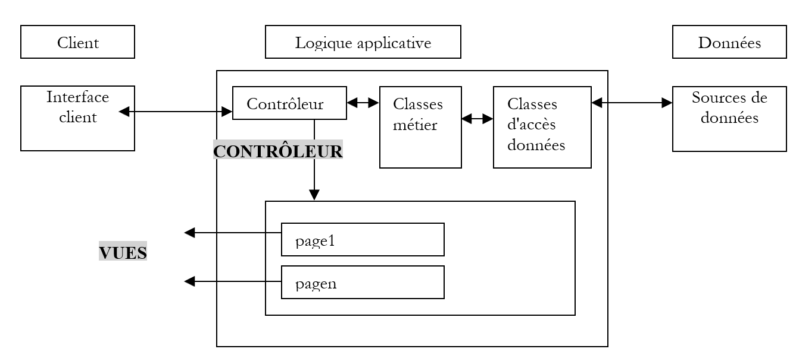
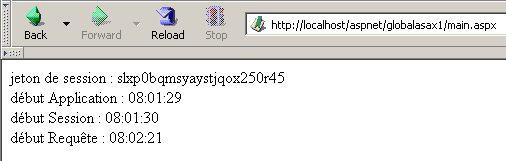
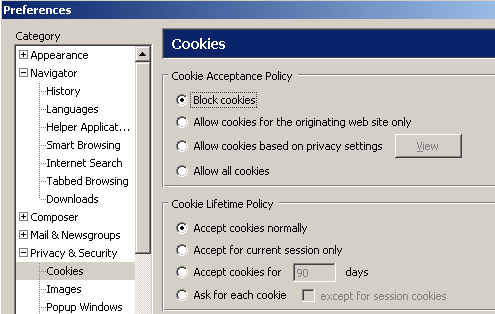
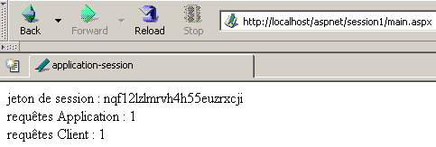
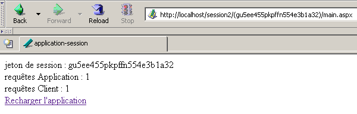

4. Die Grundlagen der ASP.NET-Entwicklung
4.1. Das Konzept einer ASP.NET-Webanwendung
4.1.1. Einführung
Eine Webanwendung ist eine Anwendung, die verschiedene Dokumente (HTML, .NET-Code, Bilder, Sounds usw.) zusammenführt. Diese Dokumente müssen sich in einem einzigen Stammverzeichnis befinden, das als Webanwendungsstammverzeichnis bezeichnet wird. Diesem Stammverzeichnis ist ein virtueller Pfad auf dem Webserver zugeordnet. Wir sind bereits auf das Konzept eines virtuellen Verzeichnisses für den Cassini-Webserver gestoßen. Dieses Konzept existiert auch für den IIS-Webserver. Ein wichtiger Unterschied zwischen den beiden Servern besteht darin, dass IIS zu jedem Zeitpunkt eine beliebige Anzahl virtueller Verzeichnisse haben kann, während der Cassini-Webserver nur eines hat – nämlich das beim Start angegebene. Das bedeutet, dass der IIS-Server mehrere Webanwendungen gleichzeitig bedienen kann, während der Cassini-Server jeweils nur eine bedient. In den vorherigen Beispielen wurde der Cassini-Server immer mit den Parametern (<webroot>,/aspnet) gestartet, die den virtuellen Ordner /aspnet mit dem physischen Ordner <webroot> verknüpften. Der Webserver bediente daher immer dieselbe Webanwendung. Dies hinderte uns jedoch nicht daran, verschiedene, unabhängige Seiten innerhalb dieser einzelnen Webanwendung zu schreiben und zu testen. Jede Webanwendung verfügt über eigene Ressourcen, die sich unter ihrem physischen Stammverzeichnis <webroot> befinden:
- einen Ordner [bin], in dem vorkompilierte Klassen abgelegt werden können
- eine [global.asax]-Datei, mit der Sie die Webanwendung als Ganzes sowie die Laufzeitumgebung für jeden ihrer Benutzer initialisieren können
- eine [web.config]-Datei, mit der Sie das Verhalten der Anwendung konfigurieren können
- eine [default.aspx]-Datei, die als Einstiegspunkt der Anwendung dient
- ...
Sobald eine Anwendung eine dieser drei Ressourcen nutzt, benötigt sie eigene physische und virtuelle Pfade. Es gibt nämlich keinen Grund, warum zwei verschiedene Webanwendungen auf dieselbe Weise konfiguriert werden sollten. Unsere vorherigen Beispiele konnten alle innerhalb derselben Anwendung (<webroot>,/aspnet) platziert werden, da sie keine der oben genannten Ressourcen nutzten.
Werfen wir noch einmal einen Blick auf die zu Beginn dieses Kapitels empfohlene MVC-Architektur für die Webanwendungsentwicklung:

Die Webanwendung besteht aus Klassendateien (Controller, Geschäftslogikklassen, Datenzugriffsklassen) und Präsentationsdateien (HTML-Dokumente, Bilder, Sounds, Stylesheets usw.). Alle diese Dateien werden in einem einzigen Stammverzeichnis abgelegt, das wir manchmal als <application-path> bezeichnen. Dieses Stammverzeichnis wird einem virtuellen Pfad <application-vpath> zugeordnet. Die Zuordnung zwischen diesem virtuellen Pfad und dem physischen Pfad wird über den Webserver konfiguriert. Wir haben gesehen, dass diese Zuordnung beim Cassini-Server beim Start des Servers erfolgt. In einem Eingabeaufforderungsfenster würden wir Cassini beispielsweise mit folgendem Befehl starten:
Im Ordner <application-path> finden wir je nach Bedarf:
- den Ordner [bin] zum Ablegen vorkompilierter Klassen (DLLs)
- die Datei [global.asax], wenn wir eine Initialisierung entweder beim Start der Anwendung oder während einer Benutzersitzung durchführen müssen
- die Datei [web.config], wenn wir die Anwendung konfigurieren müssen
- die Datei [default.aspx], wenn wir eine Standardseite in der Anwendung benötigen
Um diesem Webanwendungskonzept zu folgen, werden alle folgenden Beispiele in einem anwendungsspezifischen Ordner <application-path> abgelegt, der mit einem virtuellen Ordner <application-vpath> verknüpft wird, da der Cassini-Server beim Start diese beiden Parameter miteinander verknüpft.
4.1.2. Konfigurieren einer Webanwendung
Wenn <application-path> das Stammverzeichnis einer ASP.NET-Anwendung ist, können Sie die Datei <application-path>\web.config verwenden, um sie zu konfigurieren. Diese Datei liegt im XML-Format vor. Hier ein Beispiel:
<?xml version="1.0" encoding="UTF-8" ?>
<configuration>
<appSettings>
<add key="nom" value="tintin"/>
<add key="age" value="27"/>
</appSettings>
</configuration>
Bitte beachten Sie, dass bei XML-Tags die Groß- und Kleinschreibung beachtet werden muss. Alle Konfigurationsinformationen müssen zwischen den Tags <configuration> und </configuration> stehen. Es stehen viele Konfigurationsabschnitte zur Verfügung. Wir behandeln hier nur einen: den Abschnitt <appSettings>, der es Ihnen ermöglicht, Daten mithilfe des Tags <add> zu initialisieren. Die Syntax für dieses Tag lautet wie folgt:
Wenn der Webserver eine Anwendung startet, prüft er, ob sich im Verzeichnis <application-path> eine Datei namens web.config befindet. Ist dies der Fall, liest er sie ein und speichert ihre Informationen in einem [ConfigurationSettings]-Objekt, das allen Seiten der Anwendung zur Verfügung steht, solange diese aktiv ist. Die Klasse [ConfigurationSettings] verfügt über eine statische Methode [AppSettings]:

Um den Wert eines Schlüssels C aus der Konfigurationsdatei abzurufen, schreiben Sie ConfigurationSettings.AppSettings("C"). Dies gibt eine Zeichenfolge zurück. Um die vorherige Konfigurationsdatei zu verwenden, erstellen wir eine Seite mit dem Namen [default.aspx]. Der VB-Code in der Datei [default.aspx.vb] sieht wie folgt aus:
Imports System.Configuration
Public Class _default
Inherits System.Web.UI.Page
Protected nom As String
Protected age As String
Private Sub Page_Load(ByVal sender As System.Object, ByVal e As System.EventArgs) Handles MyBase.Load
'retrieve configuration information
nom = ConfigurationSettings.AppSettings("nom")
age = ConfigurationSettings.AppSettings("age")
End Sub
End Class
Wir sehen, dass beim Laden der Seite die Werte der Konfigurationsparameter [name] und [age] abgerufen werden. Sie werden vom Präsentationscode in [default.aspx] angezeigt:
<%@ Page src="default.aspx.vb" Language="vb" AutoEventWireup="false" Inherits="_default" %>
<html>
<head>
<title>Configuration</title>
</head>
<body>
Nom :
<% =nom %><br/>
Age :
<% =age %><br/>
</body>
</html>
Legen Sie für den Test die Dateien [web.config], [default.aspx] und [default.aspx.vb] im selben Ordner ab:
D:\data\devel\aspnet\poly\chap2\config1>dir
30/03/2004 15:06 418 default.aspx.vb
30/03/2004 14:57 236 default.aspx
30/03/2004 14:53 186 web.config
Sei <application-path> der Ordner, der die drei Anwendungsdateien enthält. Der Cassini-Server wird mit den Parametern (<application-path>,/aspnet/config1) gestartet. Wir rufen die URL [http://localhost/aspnet/config1] auf. Da [config1] ein Ordner ist, sucht der Webserver darin nach einer Datei namens [default.aspx] und zeigt sie an, falls sie gefunden wird. In diesem Fall wird sie gefunden:

4.1.3. Anwendung, Sitzung, Kontext
4.1.3.1. Die Datei global.asax
Der Code in der Datei [global.asax] wird immer ausgeführt, bevor die durch die aktuelle Anfrage angeforderte Seite geladen wird. Sie muss sich im Stammverzeichnis <application-path> der Anwendung befinden. Falls vorhanden, wird die Datei [global.asax] vom Webserver zu verschiedenen Zeitpunkten verwendet:
- beim Start oder Beenden der Webanwendung
- wenn eine Benutzersitzung beginnt oder endet
- wenn eine Benutzeranfrage beginnt
Wie bei .aspx-Seiten kann die Datei [global.asax] auf verschiedene Arten geschrieben werden, insbesondere durch die Trennung von VB-Code in eine Controller-Klasse und Präsentationscode. Dies ist die Standardauswahl von Visual Studio, und wir werden hier ebenso vorgehen. Normalerweise gibt es keine Präsentation zu handhaben, da diese Rolle den .aspx-Seiten zugewiesen ist. Der Inhalt der Datei [global.asax] beschränkt sich daher auf eine Anweisung, die auf die Datei verweist, die den Controller-Code enthält:
<%@ Application src="Global.asax.vb" Inherits="Global" %>
Beachten Sie, dass die Anweisung nicht mehr [Page], sondern [Application] lautet. Der zugehörige Controller-Code [global.asax.vb], der von Visual Studio generiert wird, lautet wie folgt:
Imports System
Imports System.Web
Imports System.Web.SessionState
Public Class Global
Inherits System.Web.HttpApplication
Sub Application_Start(ByVal sender As Object, ByVal e As EventArgs)
' Triggered when application is started
End Sub
Sub Session_Start(ByVal sender As Object, ByVal e As EventArgs)
' Triggered when the session is started
End Sub
Sub Application_BeginRequest(ByVal sender As Object, ByVal e As EventArgs)
' Triggered at the start of each request
End Sub
Sub Application_AuthenticateRequest(ByVal sender As Object, ByVal e As EventArgs)
' Triggered when user authentication is attempted
End Sub
Sub Application_Error(ByVal sender As Object, ByVal e As EventArgs)
' Triggers when an error occurs
End Sub
Sub Session_End(ByVal sender As Object, ByVal e As EventArgs)
' Triggered when session ends
End Sub
Sub Application_End(ByVal sender As Object, ByVal e As EventArgs)
' Triggered when application ends
End Sub
End Class
Beachten Sie, dass die Controller-Klasse von der Klasse [HttpApplication] abgeleitet ist. Während der gesamten Lebensdauer einer Anwendung gibt es mehrere wichtige Ereignisse. Diese werden von Prozeduren behandelt, deren Grundgerüst oben dargestellt ist.
- [Application_Start]: Erinnern Sie sich daran, dass eine Webanwendung in einem virtuellen Pfad „enthalten“ ist. Die Anwendung startet, sobald eine Seite in diesem virtuellen Pfad von einem Client angefordert wird. Die Prozedur [Application_Start] wird dann ausgeführt. Dies geschieht nur einmal. In dieser Prozedur führen wir alle für die Anwendung notwendigen Initialisierungen durch, wie zum Beispiel das Erstellen von Objekten, deren Lebensdauer der der Anwendung entspricht.
- [Application-End]: wird ausgeführt, wenn die Anwendung beendet wird. Jeder Anwendung ist ein Inaktivitäts-Timeout zugeordnet, das in [web.config] konfiguriert werden kann; nach dessen Ablauf gilt die Anwendung als beendet. Es ist daher der Webserver, der diese Entscheidung auf Grundlage der Anwendungseinstellungen trifft. Das Inaktivitäts-Timeout einer Anwendung ist definiert als der Zeitraum, in dem kein Client eine Anfrage nach einer Anwendungsressource gestellt hat.
- [Session-Start]/[Session_End]: Jedem Client wird eine Sitzung zugewiesen, es sei denn, die Anwendung ist so konfiguriert, dass keine Sitzungen verwendet werden. Ein Client ist nicht gleichbedeutend mit einem Benutzer, der vor einem Bildschirm sitzt. Wenn ein Benutzer zwei Browser geöffnet hat, um mit der Anwendung zu interagieren, stellt er zwei Clients dar. Ein Client wird durch ein Sitzungstoken identifiziert, das er jeder seiner Anfragen beifügen muss. Dieses Sitzungstoken ist eine eindeutige Zeichenfolge, die vom Webserver zufällig generiert wird. Keine zwei Clients können dasselbe Sitzungstoken haben. Dieses Token wird dem Client wie folgt zugewiesen:
- Der Client, der seine erste Anfrage stellt, sendet kein Sitzungstoken. Der Webserver erkennt dies und weist ihm eines zu. Dies markiert den Beginn der Sitzung, und die Prozedur [Session_Start] wird ausgeführt. Dies geschieht nur einmal.
- Der Client stellt nachfolgende Anfragen, indem er das Token sendet, das ihn identifiziert. Dadurch kann der Webserver die mit diesem Token verknüpften Informationen abrufen. Dies ermöglicht die Nachverfolgung zwischen den verschiedenen Anfragen des Clients.
- Die Anwendung kann einem Client ein Formular zum Beenden der Sitzung bereitstellen. In diesem Fall leitet der Client die Beendigung der Sitzung selbst ein. Die Prozedur [Session_End] wird ausgeführt. Dies geschieht nur einmal.
- Es kann vorkommen, dass der Client niemals selbst die Beendigung der Sitzung anfordert. In diesem Fall wird die Sitzung nach einer bestimmten Zeit der Inaktivität – die ebenfalls über [web.config] konfiguriert werden kann – vom Webserver beendet. Die Prozedur [Session_End] wird dann ausgeführt.
- [Application_BeginRequest]: Diese Prozedur wird ausgeführt, sobald eine neue Anfrage eintrifft. Sie wird daher für jede Anfrage von jedem Client ausgeführt. Dies ist ein guter Zeitpunkt, um die Anfrage zu prüfen, bevor sie an die angeforderte Seite weitergeleitet wird. Sie können sogar entscheiden, sie auf eine andere Seite umzuleiten.
- [Application_Error]: Wird immer dann ausgeführt, wenn ein Fehler auftritt, der nicht explizit durch den Code im Controller [global.asax.vb] behandelt wird. Hier können Sie die Anfrage des Clients auf eine Seite umleiten, auf der die Ursache des Fehlers erläutert wird.
Wenn keines dieser Ereignisse behandelt werden muss, kann die Datei [global.asax] ignoriert werden. Genau das wurde in den ersten Beispielen dieses Kapitels getan.
4.1.3.2. Beispiel 1
Entwickeln wir eine Anwendung, um die drei Schlüsselmomente besser zu verstehen: den Start der Anwendung, den Start der Sitzung und eine Client-Anfrage. Die Datei [global.asax] sieht wie folgt aus:
Die zugehörige Datei [global.asax.vb] sieht wie folgt aus:
Imports System
Imports System.Web
Imports System.Web.SessionState
Public Class global
Inherits System.Web.HttpApplication
Sub Application_Start(ByVal sender As Object, ByVal e As EventArgs)
' Triggered when application is started
' we note the time
Dim startApplication As String = Date.Now.ToString("T")
' we place it in the context of the application
Application.Item("startApplication") = startApplication
End Sub
Sub Session_Start(ByVal sender As Object, ByVal e As EventArgs)
' Triggered when the session is started
' we note the time
Dim startSession As String = Date.Now.ToString("T")
' put it in the session
Session.Item("startSession") = startSession
End Sub
Sub Application_BeginRequest(ByVal sender As Object, ByVal e As EventArgs)
' we note the time
Dim startRequest As String = Date.Now.ToString("T")
' put it in the session
Context.Items("startRequest") = startRequest
End Sub
End Class
Die wichtigsten Punkte des Codes sind wie folgt:
- Der Webserver stellt der Klasse [HttpApplication] in [global.asax.vb] eine Reihe von Objekten zur Verfügung:
- Application vom Typ [HttpApplicationState] – repräsentiert die Webanwendung – bietet Zugriff auf ein Wörterbuch von [Application.Item]-Objekten, auf das alle Clients der Anwendung zugreifen können – ermöglicht den Informationsaustausch zwischen verschiedenen Clients – der gleichzeitige Lese-/Schreibzugriff mehrerer Clients auf dieselben Daten erfordert eine Clientsynchronisation.
- Session vom Typ [HttpSessionState] – repräsentiert einen bestimmten Client – bietet Zugriff auf ein Wörterbuch von [Session.Item]-Objekten, auf das alle Anfragen dieses Clients zugreifen können – ermöglicht die Speicherung von Informationen über einen Client, die dann während der gesamten Dauer der Client-Anfragen abgerufen werden können.
- Anfrage vom Typ [HttpRequest] – repräsentiert die aktuelle HTTP-Anfrage des Clients
- Antwort vom Typ [HttpResponse] – repräsentiert die HTTP-Antwort, die derzeit vom Server für den Client erstellt wird
- Server vom Typ [HttpServerUtility] – stellt Hilfsmethoden bereit, insbesondere zum Umleiten der Anfrage auf eine andere als die ursprünglich vorgesehene Seite.
- Kontext vom Typ [HttpContext] – dieses Objekt wird bei jeder neuen Anfrage neu erstellt, wird jedoch von allen an der Bearbeitung der Anfrage beteiligten Seiten gemeinsam genutzt – ermöglicht die Weitergabe von Informationen von Seite zu Seite während der Anfragebearbeitung über sein Items-Wörterbuch.
- Die Prozedur [Application_Start] protokolliert den Start der Anwendung in einer Variablen, die in einem auf Anwendungsebene zugänglichen Verzeichnis gespeichert ist
- Die Prozedur [Session_Start] protokolliert den Beginn der Sitzung in einer Variablen, die in einem auf Sitzungsebene zugänglichen Wörterbuch gespeichert ist
- Die Prozedur [Application_BeginRequest] protokolliert den Start der Anfrage in einer Variablen, die in einem Wörterbuch gespeichert ist, auf das auf Anfrageebene zugegriffen werden kann (d. h. während der gesamten Verarbeitung verfügbar, aber am Ende der Verarbeitung verloren)
Die Zielseite ist die folgende Seite [main.aspx]:
<%@ Page src="main.aspx.vb" Language="vb" AutoEventWireup="false" Inherits="main" %>
<html>
<head>
<title>global.asax</title>
</head>
<body>
jeton de session :
<% =jeton %><br/>
début Application :
<% =startApplication %><br/>
début Session :
<% =startSession %><br/>
début Requête :
<% =startRequest %><br/>
</body>
</html>
Diese Präsentationsseite zeigt Werte an, die von ihrem Controller [main.aspx.vb] berechnet wurden:
Public Class main
Inherits System.Web.UI.Page
Protected startApplication As String
Protected startSession As String
Protected startRequest As String
Protected jeton as String
Private Sub Page_Load(ByVal sender As System.Object, ByVal e As System.EventArgs) Handles MyBase.Load
' retrieve application and session info
jeton=Session.SessionId
startApplication = Application.Item("startApplication").ToString
startSession = Session.Item("startSession").ToString
startRequest = Context.Items("startRequest").ToString
End Sub
End Class
Der Controller ruft einfach die drei Informationen ab, die von [global.asax.vb] in der Anwendung, der Sitzung und dem Kontext gespeichert wurden.
Wir testen die Anwendung wie folgt:
- Die Dateien werden in einem einzigen Ordner <application-path> gesammelt

- der Cassini-Server wird mit den Parametern (<Anwendungspfad>,/aspnet/globalasax1) gestartet
- Ein erster Client fordert die URL [http://localhost/aspnet/globalasax1/main.aspx] an und erhält das folgende Ergebnis:

- Derselbe Client stellt eine neue Anfrage (über die Option „Neu laden“ des Browsers):

Wir sehen, dass sich nur die Anforderungszeit geändert hat. Dies deutet auf zwei Dinge hin:
- Die Prozeduren [Application_Start] und [Session_Start] in [global.asax] wurden bei der zweiten Anfrage nicht ausgeführt.
- Die Objekte [Application] und [Session], in denen die Startzeiten der Anwendung und der Sitzung gespeichert wurden, stehen für die zweite Anfrage weiterhin zur Verfügung.
- Wir starten einen zweiten Browser, um einen zweiten Client zu erstellen, und fordern dieselbe URL erneut an:

Diesmal sehen wir, dass sich die Sitzungszeit geändert hat. Der zweite Browser wurde, obwohl er sich auf demselben Rechner befindet, als zweiter Client behandelt, und es wurde eine neue Sitzung für ihn erstellt. Wir können sehen, dass die beiden Clients nicht dasselbe Sitzungstoken haben. Die Anwendungsstartzeit hat sich nicht geändert, was bedeutet, dass:
- die Prozedur [Application_Start] in [global.asax.vb] nicht ausgeführt wurde
- das [Application]-Objekt, in dem die Startzeit der Anwendung gespeichert wurde, für den zweiten Client zugänglich ist. Daher ist dies das Objekt, in dem Informationen gespeichert werden sollten, die zwischen den verschiedenen Clients der Anwendung ausgetauscht werden müssen, während das [Session]-Objekt dazu dient, Informationen zu speichern, die zwischen Anfragen desselben Clients ausgetauscht werden müssen.
4.1.3.3. Ein Überblick
Mit dem bisher Gelernten können wir ein vorläufiges Diagramm erstellen, das erklärt, wie ein Webserver und die von ihm bedienten Webanwendungen funktionieren:

Das obige Diagramm zeigt einen Server, der zwei Anwendungen mit den Bezeichnungen A und B bedient, die jeweils zwei Clients haben. Ein Webserver ist in der Lage, mehrere Webanwendungen gleichzeitig zu bedienen. Diese Anwendungen sind völlig unabhängig voneinander. Wir konzentrieren uns auf Anwendung A. Die Verarbeitung einer Anfrage von Client-1A an Anwendung A verläuft wie folgt:
- Client 1A fordert vom Webserver eine Ressource an, die zur Domäne von Anwendung A gehört. Das bedeutet, er fordert eine URL der Form [http://machine:port/VA/ressource] an, wobei VA der virtuelle Pfad von Anwendung A ist.
- Wenn der Webserver feststellt, dass dies die erste Anfrage nach einer Ressource von Anwendung A ist, löst er das Ereignis [Application_Start] in der Datei [global.asax] von Anwendung A aus. Es wird ein [ApplicationA]-Objekt vom Typ [HttpApplicationState] erstellt. Die verschiedenen Teile der Anwendung speichern in diesem Objekt Daten mit dem Geltungsbereich [Application], d. h. Daten, die alle Benutzer betreffen. Das [ApplicationA]-Objekt bleibt bestehen, bis der Webserver die Anwendung A entlädt.
- Wenn der Webserver zudem feststellt, dass es sich um einen neuen Client für Anwendung A handelt, löst er das [Session_Start]-Ereignis in der [global.asax]-Datei von Anwendung A aus. Es wird ein [Session-1A]-Objekt vom Typ [HttpSessionState] erstellt. Dieses Objekt ermöglicht es Anwendung A, Objekte im [Session]-Gültigkeitsbereich zu speichern, d. h. Objekte, die zu einem bestimmten Client gehören. Das [Session-1A]-Objekt bleibt so lange bestehen, wie Client 1A Anfragen stellt. Es ermöglicht die Nachverfolgung dieses Clients. Der Webserver erkennt in zwei Fällen, dass es sich um einen neuen Client handelt:
- Der Client hat kein Session-Token in den HTTP-Headern seiner Anfrage gesendet.
- der Client hat ein Session-Token gesendet, das nicht existiert (Client-Fehler oder Hacking-Versuch) oder das nicht mehr existiert. Ein Session-Token läuft nach einer bestimmten Zeit der Inaktivität des Clients ab (standardmäßig 20 Minuten bei IIS). Diese Zeitüberschreitungsdauer ist konfigurierbar.
- In allen Fällen löst der Webserver das Ereignis [Application_BeginRequest] in der Datei [global.asax] aus. Dieses Ereignis leitet die Verarbeitung einer Client-Anfrage ein. Üblicherweise wird dieses Ereignis nicht behandelt, sondern die Kontrolle an die vom Client angeforderte Seite übergeben, die die Anfrage dann verarbeitet. Wir können dieses Ereignis aber auch nutzen, um die Anfrage zu analysieren, zu verarbeiten und zu entscheiden, welche Seite als Antwort gesendet werden soll. Wir werden diese Technik nutzen, um eine Anwendung zu implementieren, die der von uns besprochenen MVC-Architektur folgt.
- Sobald der Filter in [global.asax] durchlaufen wurde, wird die Client-Anfrage an eine .aspx-Seite weitergeleitet, die die Anfrage verarbeitet. Wir werden später sehen, dass es möglich ist, die Anfrage durch einen Filter zu leiten, der aus mehreren Seiten besteht. Die letzte Seite ist dafür verantwortlich, die Antwort an den Client zu senden. Seiten können der ursprünglichen Anfrage des Clients Informationen hinzufügen, die sie berechnet haben. Sie können diese Informationen in der Sammlung Context.Items speichern. Tatsächlich haben alle Seiten, die an der Verarbeitung einer Client-Anfrage beteiligt sind, Zugriff auf diesen Datenpool.
- Der Code der verschiedenen Seiten hat Zugriff auf die Datenreservoirs, die durch die Objekte [ApplicationA], [Session-1A], ... repräsentiert werden. Es ist wichtig zu beachten, dass der Webserver mehrere Clients für Anwendung A gleichzeitig verarbeitet. Alle diese Clients haben Zugriff auf das Objekt [Application A]. Wenn sie Daten in diesem Objekt ändern müssen, ist eine Clientsynchronisation erforderlich. Jeder Client XA hat zudem Zugriff auf den Datenpool [Session-XA]. Da dieser für ihn reserviert ist, ist hier keine Synchronisation erforderlich.
- Der Webserver bedient mehrere Webanwendungen gleichzeitig. Es gibt keine Interferenzen zwischen den Clients dieser verschiedenen Anwendungen.
Aus diesen Erläuterungen lassen sich folgende Punkte zusammenfassen:
- Zu jedem Zeitpunkt bedient ein Webserver mehrere Clients gleichzeitig. Das bedeutet, dass er nicht wartet, bis eine Anfrage abgeschlossen ist, bevor er eine weitere verarbeitet. Zum Zeitpunkt T werden daher mehrere Anfragen verarbeitet, die zu verschiedenen Clients für verschiedene Anwendungen gehören. Der gleichzeitig innerhalb des Webservers ausgeführte Verarbeitungscode wird manchmal als Ausführungsthreads bezeichnet.
- Die Ausführungsthreads von Clients aus verschiedenen Webanwendungen beeinträchtigen sich nicht gegenseitig. Es besteht Isolation.
- Ausführungsthreads von Clients derselben Anwendung müssen möglicherweise Daten gemeinsam nutzen:
- Ausführungsthreads für Anfragen von zwei verschiedenen Clients (nicht dasselbe Sitzungstoken) können Daten über das [Application]-Objekt gemeinsam nutzen.
- Ausführungsthreads für aufeinanderfolgende Anfragen desselben Clients können Daten über das [Session]-Objekt austauschen.
- Ausführungsthreads für aufeinanderfolgende Seiten, die dieselbe Anfrage eines bestimmten Clients verarbeiten, können Daten über das [Context]-Objekt austauschen.
4.1.3.4. Beispiel 2
Lassen Sie uns ein neues Beispiel entwickeln, das veranschaulicht, was wir gerade behandelt haben. Wir legen die folgenden Dateien im selben Ordner ab:
[global.asax]
[global.asax.vb]
Imports System
Imports System.Web
Imports System.Web.SessionState
Public Class global
Inherits System.Web.HttpApplication
Sub Application_Start(ByVal sender As Object, ByVal e As EventArgs)
' Triggered when application is started
' init customer counter
Application.Item("nbRequêtes") = 0
End Sub
Sub Session_Start(ByVal sender As Object, ByVal e As EventArgs)
' Triggered when the session is started
' init query counter
Session.Item("nbRequêtes") = 0
End Sub
End Class
Der Zweck der Anwendung besteht darin, die Gesamtzahl der an die Anwendung gerichteten Anfragen sowie die Anzahl der Anfragen pro Client zu zählen. Beim Start der Anwendung [Application_Start] wird der Zähler für an die Anwendung gerichtete Anfragen auf 0 gesetzt. Dieser Zähler wird im [Application]-Bereich platziert, da er von allen Clients inkrementiert werden muss. Wenn sich ein Client zum ersten Mal verbindet [Session_Start], setzen wir den Zähler für die von diesem Client gestellten Anfragen auf 0. Dieser Zähler wird im [Session]-Bereich platziert, da er nur für einen bestimmten Client gilt.
Sobald [global.asax] ausgeführt wurde, wird die folgende [main.aspx]-Datei ausgeführt:
<%@ Page src="main.aspx.vb" Language="vb" AutoEventWireup="false" Inherits="main" %>
<html>
<head>
<title>application-session</title>
</head>
<body>
jeton de session :
<% =jeton %>
<br />
requêtes Application :
<% =nbRequêtesApplication %>
<br />
requêtes Client :
<% =nbRequêtesClient %>
<br />
</body>
</html>
Es zeigt drei Informationen an, die vom Controller berechnet wurden:
- die Identität des Clients über sein Session-Token: [token]
- die Gesamtzahl der an die Anwendung gerichteten Anfragen: [nbRequêtesApplication]
- die Gesamtzahl der vom als 1 identifizierten Client gestellten Anfragen: [nbClientRequests]
Die drei Informationen werden in [main.aspx.vb] berechnet:
Public Class main
Inherits System.Web.UI.Page
Protected nbRequêtesApplication As String
Protected nbRequêtesClient As String
Protected jeton As String
Private Sub Page_Load(ByVal sender As Object, ByVal e As System.EventArgs) Handles MyBase.Load
' one more request for the
Application.Item("nbRequêtes") = CType(Application.Item("nbRequêtes"), Integer) + 1
' one more request in the session
Session.Item("nbRequêtes") = CType(Session.Item("nbRequêtes"), Integer) + 1
' init presentation variables
nbRequêtesApplication = Application.Item("nbRequêtes").ToString
jeton = Session.SessionID
nbRequêtesClient = Session.Item("nbRequêtes").ToString
End Sub
End Class
Wenn [main.aspx.vb] ausgeführt wird, verarbeiten wir eine Anfrage von einem bestimmten Client. Wir verwenden das [Application]-Objekt, um die Anzahl der Anfragen für die Anwendung zu erhöhen, und das [Session]-Objekt, um die Anzahl der Anfragen für den Client zu erhöhen, dessen Anfrage wir gerade verarbeiten. Beachten Sie, dass zwar alle Clients derselben Anwendung dasselbe [Application]-Objekt teilen, jeder jedoch sein eigenes [Session]-Objekt hat.
Wir testen die Anwendung, indem wir die vier zuvor genannten Dateien in einem Ordner namens <application-path> ablegen und den Cassini-Server mit den Parametern (<application-path>,/aspnet/webapplia) starten. Wir öffnen einen Browser und rufen die URL [http://localhost/aspnet/webapplia/main.aspx] auf:

Wir senden eine zweite Anfrage über die Schaltfläche [Reload]:

Wir öffnen einen zweiten Browser, um dieselbe URL anzufordern. Für den Webserver ist dies ein neuer Client:

Wir sehen, dass sich das Sitzungstoken geändert hat, was auf einen neuen Client hinweist. Dies spiegelt sich in der Anzahl der Client-Anfragen wider. Kehren wir nun zum ersten Browser zurück und rufen dieselbe URL erneut auf:

Die Anzahl der an die Anwendung gerichteten Anfragen wird korrekt gezählt.
4.1.3.5. Die Notwendigkeit, die Clients einer Anwendung zu synchronisieren
In der vorherigen Anwendung wird der Zähler für Anfragen an die Anwendung in der Prozedur [Form_Load] der Seite [main.aspx] wie folgt erhöht:
' une requête de plus pour l'application
Application.Item("nbRequêtes") = CType(Application.Item("nbRequêtes"), Integer) + 1
Diese Anweisung ist zwar einfach, erfordert jedoch mehrere Prozessorbefehle zur Ausführung. Nehmen wir an, es sind drei:
- Lesen des Zählers
- Erhöhen des Zählers
- Schreiben des Zählers
Der Webserver läuft auf einem Multitasking-Rechner, was bedeutet, dass jeder Task für einige Millisekunden die Prozessorzeit erhält, bevor er sie verliert und erst wieder erhält, nachdem alle anderen Tasks ebenfalls ihre Zeit erhalten haben. Nehmen wir an, dass zwei Clients, A und B, gleichzeitig eine Anfrage an den Webserver senden. Nehmen wir an, Client A ist zuerst an der Reihe, ruft die Prozedur [Form_Load] in [main.aspx.vb] auf, liest den Zähler (=100) und wird dann unterbrochen, weil sein Zeitfenster abgelaufen ist. Nehmen wir nun an, Client B ist an der Reihe und erleidet das gleiche Schicksal: Er erreicht die -Methode, liest den Zählerwert (=100), hat aber keine Zeit, ihn zu inkrementieren. Die Clients A und B haben beide einen Zählerwert von 100. Nehmen wir an, Client A ist wieder an der Reihe: Er erhöht seinen Zähler, setzt ihn auf 101 und beendet dann den Vorgang. Nun ist Client B an der Reihe, der den alten Zählerwert besitzt, nicht den neuen. Er setzt den Zählerwert daher ebenfalls auf 101 und beendet den Vorgang. Der Wert des Anforderungszählers der Anwendung ist nun falsch.
Um dieses Problem zu veranschaulichen, greifen wir auf die vorherige Anwendung zurück und ändern sie wie folgt:
- Die Dateien [global.asax], [global.asax.vb] und [main.aspx] bleiben unverändert
- Die Datei [main.aspx.vb] sieht nun wie folgt aus:
Imports System.Threading
Public Class main
Inherits System.Web.UI.Page
Protected nbRequêtesApplication As Integer
Protected nbRequêtesClient As Integer
Protected jeton As String
Private Sub Page_Load(ByVal sender As Object, ByVal e As System.EventArgs) Handles MyBase.Load
' one more request for the application and session
' meter reading
nbRequêtesApplication = CType(Application.Item("nbRequêtes"), Integer)
nbRequêtesClient = CType(Session.Item("nbRequêtes"), Integer)
' wait 5 s
Thread.Sleep(5000)
' meter incrementation
nbRequêtesApplication += 1
nbRequêtesClient += 1
' meter registration
Application.Item("nbRequêtes") = nbRequêtesApplication
Session.Item("nbRequêtes") = nbRequêtesClient
' init presentation variables
jeton = Session.SessionID
End Sub
End Class
Die Zählerschritt-Erhöhung wurde in vier Phasen unterteilt:
- Lesen des Zählers
- Anhalten des Ausführungs-Threads
- Inkrementieren des Zählers
- Neuschreiben des Zählers
Betrachten wir noch einmal unsere beiden Clients A und B. Zwischen der Lese- und der Inkrementierungsphase der Anforderungszähler zwingen wir den Ausführungs-Thread, für 5 Sekunden zu pausieren. Die unmittelbare Folge davon ist, dass er den Prozessor verliert, der dann einer anderen Aufgabe zugewiesen wird. Nehmen wir an, Client A ist zuerst dran. Er liest den Zählerwert N und wird für 5 Sekunden unterbrochen. Wenn Client B während dieser Zeit Zugriff auf die CPU hat, sollte er denselben Zählerwert N lesen. Letztendlich sollten beide Clients denselben Zählerwert anzeigen, was jedoch nicht normal wäre.
Wir testen die Anwendung, indem wir die vier vorherigen Dateien in einen Ordner namens <application-path> legen und den Cassini-Server mit den Parametern (<application-path>,/aspnet/webapplib) starten. Wir richten zwei verschiedene Browser mit der URL [http://localhost/aspnet/webapplib/main.aspx] ein. Wir starten den ersten, um die URL abzufragen, und starten dann, ohne auf die Antwort zu warten, die 5 Sekunden später eintreffen wird, den zweiten Browser. Nach etwas mehr als 5 Sekunden erhalten wir das folgende Ergebnis:

Wir sehen:
- dass wir zwei verschiedene Clients haben (nicht dasselbe Sitzungstoken)
- dass jeder Client eine Anfrage gestellt hat
- dass der Zähler für an die Anwendung gesendete Anfragen daher in einem der beiden Browser bei 2 stehen müsste. Dies ist jedoch nicht der Fall.
Versuchen wir nun ein weiteres Experiment. Mit demselben Browser senden wir fünf Anfragen an die URL [http://localhost/aspnet/webapplib/main.aspx]. Auch hier senden wir sie nacheinander, ohne auf die Ergebnisse zu warten. Sobald alle Anfragen ausgeführt wurden, erhalten wir für die letzte das folgende Ergebnis:

Wir können feststellen:
- dass die 5 Anfragen als vom selben Client stammend angesehen wurden, da der Client-Anfragezähler bei 5 steht. Obwohl oben nicht dargestellt, können wir sehen, dass das Session-Token tatsächlich für alle 5 Anfragen identisch ist.
- dass der Zähler für an die Anwendung gerichtete Anfragen korrekt ist.
Was können wir daraus schließen? Nichts Definitives. Vielleicht beginnt der Webserver nicht mit der Ausführung einer Anfrage eines Clients, wenn dieser Client bereits eine Anfrage in Bearbeitung hat? Es käme daher nie zu einer gleichzeitigen Ausführung von Anfragen desselben Clients. Sie würden nacheinander ausgeführt werden. Dieser Punkt muss überprüft werden. Es könnte tatsächlich vom verwendeten Client-Typ abhängen.
4.1.3.6. Client-Synchronisation
Das in der vorherigen Anwendung hervorgehobene Problem ist ein klassisches (aber nicht leicht zu lösendes) Problem des exklusiven Zugriffs auf eine Ressource. In unserem konkreten Fall müssen wir sicherstellen, dass sich zwei Clients, A und B, nicht gleichzeitig in der Code-Sequenz befinden können:
- den Zähler lesen
- Erhöhen des Zählers
- Schreiben in den Zähler
Eine solche Code-Sequenz wird als kritischer Abschnitt bezeichnet. Sie erfordert die Synchronisation der Threads, die sie gleichzeitig ausführen. Die .NET-Plattform bietet verschiedene Werkzeuge, um dies sicherzustellen. Hier werden wir die Klasse [Mutex] verwenden.

Hier verwenden wir nur die folgenden Konstruktoren und Methoden:
erstellt ein Synchronisationsobjekt M | |
Der Thread T1, der die Operation M.WaitOne() ausführt, fordert die Eigentumsrechte am Synchronisationsobjekt M an. Wenn der Mutex M von keinem Thread gehalten wird (der Ausgangszustand), wird er dem Thread T1 „übergeben“, der ihn angefordert hat. Wenn wenig später der Thread T2 denselben Vorgang ausführt, wird er blockiert. Dies liegt daran, dass ein Mutex jeweils nur einem Thread gehören kann. Er wird freigegeben, sobald der Thread T1 den von ihm gehaltenen Mutex M freigibt. Somit können mehrere Threads blockiert sein, während sie auf den Mutex M warten. | |
Der Thread T1, der die Operation M.ReleaseMutex() ausführt, gibt die Kontrolle über den Mutex M ab. Wenn Thread T1 den Prozessor verliert, kann das System ihn einem der Threads zuweisen, die auf den Mutex M warten. Nur einer erhält ihn nacheinander; die anderen, die auf M warten, bleiben blockiert |
Ein Mutex M verwaltet den Zugriff auf eine gemeinsam genutzte Ressource R. Ein Thread fordert die Ressource R über M.WaitOne() an und gibt sie über M.ReleaseMutex() frei. Ein kritischer Codeabschnitt, der jeweils nur von einem Thread ausgeführt werden darf, ist eine gemeinsam genutzte Ressource. Die Synchronisation der Ausführung des kritischen Abschnitts kann wie folgt erreicht werden:
wobei M ein Mutex-Objekt ist. Natürlich darf man niemals vergessen, einen nicht mehr benötigten Mutex freizugeben, damit ein anderer Thread seinerseits in den kritischen Abschnitt eintreten kann; andernfalls erhalten Threads, die auf einen Mutex warten, der nie freigegeben wird, niemals Zugriff auf den Prozessor. Darüber hinaus muss man eine Deadlock-Situation vermeiden, in der zwei Threads aufeinander warten. Betrachten Sie die folgenden nacheinander stattfindenden Aktionen:
- Ein Thread T1 erwirbt die Kontrolle über einen Mutex M1, um auf eine gemeinsam genutzte Ressource R1 zuzugreifen
- Ein Thread T2 erwirbt einen Mutex M2, um auf eine gemeinsam genutzte Ressource R2 zuzugreifen
- Thread T1 fordert Mutex M2 an. Er wird blockiert.
- Thread T2 fordert Mutex M1 an. Er wird blockiert.
Hier warten die Threads T1 und T2 aufeinander. Diese Situation tritt auf, wenn Threads zwei gemeinsam genutzte Ressourcen benötigen: die Ressource R1, die durch den Mutex M1 kontrolliert wird, und die Ressource R2, die durch den Mutex M2 kontrolliert wird. Eine mögliche Lösung besteht darin, beide Ressourcen gleichzeitig über einen einzigen Mutex M anzufordern. Dies ist jedoch nicht immer möglich, insbesondere wenn es zu einer langen Sperrung einer kostspieligen Ressource führt. Eine andere Lösung besteht darin, dass ein Thread, der M1 hält und M2 nicht erhalten kann, M1 freigibt, um ein Deadlock zu vermeiden.
Wenn wir das gerade Gelernte in die Praxis umsetzen, sieht unsere Anwendung wie folgt aus:
- Die Dateien [global.asax] und [main.aspx] bleiben unverändert
- Die Datei [global.asax.vb] sieht nun wie folgt aus:
Imports System
Imports System.Web
Imports System.Web.SessionState
Imports System.Threading
Public Class global
Inherits System.Web.HttpApplication
Sub Application_Start(ByVal sender As Object, ByVal e As EventArgs)
' Triggered when application is started
' init customer counter
Application.Item("nbRequêtes") = 0
' create a synchronization lock
Application.Item("verrou") = New Mutex
End Sub
Sub Session_Start(ByVal sender As Object, ByVal e As EventArgs)
' Triggered when the session is started
' init query counter
Session.Item("nbRequêtes") = 0
End Sub
End Class
Die einzige neue Funktion ist die Erstellung eines [Mutex], der von den Clients zur Synchronisation verwendet wird. Da er für alle Clients zugänglich sein muss, wird er im [Application]-Objekt platziert.
- Die Datei [main.aspx.vb] sieht nun wie folgt aus:
Imports System.Threading
Public Class main
Inherits System.Web.UI.Page
Protected nbRequêtesApplication As Integer
Protected nbRequêtesClient As Integer
Protected jeton As String
Private Sub Page_Load(ByVal sender As Object, ByVal e As System.EventArgs) Handles MyBase.Load
' one more request for the application and session
' enter a critical section - retrieve the synchronization lock
Dim verrou As Mutex = CType(Application.Item("verrou"), Mutex)
' we ask you to enter the following critical section on your own
verrou.WaitOne()
' meter reading
nbRequêtesApplication = CType(Application.Item("nbRequêtes"), Integer)
nbRequêtesClient = CType(Session.Item("nbRequêtes"), Integer)
' wait 5 s
Thread.Sleep(5000)
' meter incrementation
nbRequêtesApplication += 1
nbRequêtesClient += 1
' meter registration
Application.Item("nbRequêtes") = nbRequêtesApplication
Session.Item("nbRequêtes") = nbRequêtesClient
' allows access to the critical section
verrou.ReleaseMutex()
' init presentation variables
jeton = Session.SessionID
End Sub
End Class
Wir sehen, dass der Client:
- um alleinigen Zugriff auf den kritischen Abschnitt bittet. Dazu fordert er exklusiven Besitz des Mutex [Lock] an
- den Mutex [Lock] am Ende des kritischen Abschnitts freigibt, damit ein anderer Client seinerseits den kritischen Abschnitt betreten kann.
Wir testen die Anwendung, indem wir die vier vorherigen Dateien in einen Ordner namens <application-path> legen und den Cassini-Server mit den Parametern (<application-path>,/aspnet/webapplic) starten. Wir öffnen zwei verschiedene Browser mit der URL [http://localhost/aspnet/webapplic/main.aspx]. Wir starten den ersten, um die URL anzufordern, und starten dann, ohne auf die Antwort zu warten, die 5 Sekunden später eintreffen wird, den zweiten Browser. Nach etwas mehr als 5 Sekunden erhalten wir das folgende Ergebnis:

Diesmal ist der Anforderungszähler der Anwendung korrekt.
Die wichtigste Erkenntnis aus dieser ausführlichen Demonstration ist die absolute Notwendigkeit, Clients derselben Webanwendung zu synchronisieren, wenn sie Elemente aktualisieren müssen, die von allen Clients gemeinsam genutzt werden.
4.1.3.7. Verwaltung von Sitzungstoken
Wir haben bereits mehrfach über das zwischen dem Client und dem Webserver ausgetauschte Session-Token gesprochen. Lassen Sie uns noch einmal zusammenfassen, wie es funktioniert:
- Der Client sendet eine erste Anfrage an den Server. Dabei wird kein Session-Token gesendet.
- Da das Session-Token in der Anfrage fehlt, erkennt der Server einen neuen Client und weist ihm ein Token zu. Mit diesem Token ist ein [Session]-Objekt verknüpft, das zum Speichern von Informationen verwendet wird, die für diesen Client spezifisch sind. Das Token begleitet alle Anfragen dieses Clients. Es wird in die HTTP-Header der Antwort auf die erste Anfrage des Clients aufgenommen.
- Der Client kennt nun sein Sitzungstoken. Er sendet es in den HTTP-Headern jeder nachfolgenden Anfrage an den Webserver zurück. Dank des Tokens kann der Server das mit dem Client verknüpfte [Session]-Objekt abrufen.
Um diesen Mechanismus zu veranschaulichen, greifen wir auf die vorherige Anwendung zurück und ändern lediglich die Datei [main.aspx.vb]:
Imports System.Threading
Public Class main
Inherits System.Web.UI.Page
Protected nbRequêtesApplication As Integer
Protected nbRequêtesClient As Integer
Protected jeton As String
Private Sub Page_Load(ByVal sender As Object, ByVal e As System.EventArgs) Handles MyBase.Load
' one more request for the application and session
' enter a critical section - retrieve the synchronization lock
Dim verrou As Mutex = CType(Application.Item("verrou"), Mutex)
' you ask to enter the next section on your own
verrou.WaitOne()
' meter reading
nbRequêtesApplication = CType(Application.Item("nbRequêtes"), Integer)
nbRequêtesClient = CType(Session.Item("nbRequêtes"), Integer)
' wait 5 s
Thread.Sleep(5000)
' counter incrementation
nbRequêtesApplication += 1
nbRequêtesClient += 1
' meter registration
Application.Item("nbRequêtes") = nbRequêtesApplication
Session.Item("nbRequêtes") = nbRequêtesClient
' allows access to the critical section
verrou.ReleaseMutex()
' init presentation variables
jeton = Session.SessionID
End Sub
Private Sub Page_Init(ByVal sender As Object, ByVal e As System.EventArgs) Handles MyBase.Init
' the client request is stored in request.txt of the application folder
Dim requestFileName As String = Me.MapPath(Me.TemplateSourceDirectory) + "\request.txt"
Me.Request.SaveAs(requestFileName, True)
End Sub
End Class
Wenn das [Page_Init]-Ereignis eintritt, speichern wir die Client-Anfrage im Anwendungsverzeichnis. Lassen Sie uns einige Punkte zusammenfassen:
- [TemplateSourceDirectory] steht für den virtuellen Pfad der aktuell ausgeführten Seite,
- MapPath(TemplateSourceDirectory) steht für den entsprechenden physischen Pfad. Damit können wir den physischen Pfad der zu erstellenden Datei bilden,
- [Request] ist ein Objekt, das die aktuell verarbeitete Anfrage darstellt. Dieses Objekt wurde durch die Verarbeitung der vom Client gesendeten Rohanfrage erstellt, d. h. einer Folge von Textzeilen in der Form:

- Request.Save([FileName]) speichert die gesamte Client-Anfrage (HTTP-Header und, falls zutreffend, das nachfolgende Dokument) in einer Datei, deren Pfad als Parameter übergeben wird.
Wir können somit genau nachvollziehen, wie die Anfrage des Clients lautete. Wir testen die Anwendung, indem wir die vier zuvor genannten Dateien in einen Ordner namens <application-path> legen und den Cassini-Server mit den Parametern (<application-path>,/aspnet/session1) starten. Anschließend rufen wir über einen Browser die URL
[http://localhost/aspnet/session1/main.aspx] an. Wir erhalten das folgende Ergebnis:

Wir verwenden die von [main.aspx.vb] gespeicherte Datei [request.txt], um auf die Anfrage des Browsers zuzugreifen:
GET /aspnet/session1/main.aspx HTTP/1.1
Cache-Control: max-age=0
Connection: keep-alive
Keep-Alive: 300
Accept: text/xml,application/xml,application/xhtml+xml,text/html;q=0.9,text/plain;q=0.8,image/png,*/*;q=0.5
Accept-Charset: ISO-8859-1,utf-8;q=0.7,*;q=0.7
Accept-Encoding: gzip,deflate
Accept-Language: en-us,en;q=0.5
Host: localhost
User-Agent: Mozilla/5.0 (Windows; U; Windows NT 5.0; en-US; rv:1.7b) Gecko/20040316
Wir sehen, dass der Browser eine Anfrage für die URL [/aspnet/session1/main.aspx] gestellt und weitere Informationen gesendet hat, die wir im vorherigen Kapitel besprochen haben. Hier ist kein Session-Token zu sehen. Die als Antwort empfangene Seite zeigt, dass der Server ein Session-Token erstellt hat. Wir wissen noch nicht, ob der Browser es empfangen hat. Stellen wir nun eine zweite Anfrage mit demselben Browser (Neu laden). Wir erhalten die folgende neue Antwort:

Die Sitzungsverfolgung funktioniert tatsächlich, da die Anzahl der Sitzungsanfragen korrekt erhöht wurde. Sehen wir uns nun den Inhalt der Datei [request.txt] an:
GET /aspnet/session1/main.aspx HTTP/1.1
Cache-Control: max-age=0
Connection: keep-alive
Keep-Alive: 300
Accept: text/xml,application/xml,application/xhtml+xml,text/html;q=0.9,text/plain;q=0.8,image/png,*/*;q=0.5
Accept-Charset: ISO-8859-1,utf-8;q=0.7,*;q=0.7
Accept-Encoding: gzip,deflate
Accept-Language: en-us,en;q=0.5
Cookie: ASP.NET_SessionId=y153tk45sise0lrhdzrf22m3
Host: localhost
User-Agent: Mozilla/5.0 (Windows; U; Windows NT 5.0; en-US; rv:1.7b) Gecko/20040316
Wir sehen, dass der Browser bei dieser zweiten Anfrage dem Server einen neuen HTTP-Header [Cookie:] gesendet hat, der eine Information namens [ASP.NET_SessionId] definiert, deren Wert dem Sitzungstoken entspricht, das in der Antwort auf die erste Anfrage enthalten war. Anhand dieses Tokens ordnet der Webserver diese neue Anfrage dem durch das Token [y153tk45sise0lrhdzrf22m3] identifizierten [Session]-Objekt zu und ruft den zugehörigen Anfragenzähler ab.
Wir kennen den Mechanismus, über den der Server das Token an den Client gesendet hat, immer noch nicht, da wir keinen Zugriff auf die HTTP-Antwort des Servers haben. Erinnern Sie sich daran, dass diese Antwort dieselbe Struktur wie die Anfrage des Clients hat, nämlich eine Reihe von Textzeilen in folgender Form:

Wir haben zuvor einen Web-Client verwendet, der uns Zugriff auf die HTTP-Antwort des Webservers ermöglichte: den curl-Client. Wir werden ihn erneut in einem Befehlszeilenfenster verwenden, um dieselbe URL wie im vorherigen Browser abzufragen:
E:\curl>curl --include http://localhost/aspnet/session1/main.aspx
HTTP/1.1 200 OK
Server: Microsoft ASP.NET Web Matrix Server/0.6.0.0
Date: Thu, 01 Apr 2004 07:31:42 GMT
X-AspNet-Version: 1.1.4322
Set-Cookie: ASP.NET_SessionId=qxnxmqmvhde3al55kzsmx445; path=/
Cache-Control: private
Content-Type: text/html; charset=utf-8
Content-Length: 228
Connection: Close
<HTML>
<HEAD>
<title>application-session</title>
</HEAD>
<body>
jeton de session :
qxnxmqmvhde3al55kzsmx445
<br>
requêtes Application :
3
<br>
requêtes Client :
1
<br>
</body>
</HTML>
Wir haben die Antwort auf unsere Frage. Der Webserver sendet das Sitzungstoken in Form eines HTTP-Headers [Set-Cookie:]:
Führen wir dieselbe Anfrage durch, ohne das Session-Token zu senden. Wir erhalten folgende Antwort:
E:\curl>curl --include http://localhost/aspnet/session1/main.aspx
HTTP/1.1 200 OK
Server: Microsoft ASP.NET Web Matrix Server/0.6.0.0
Date: Thu, 01 Apr 2004 07:36:06 GMT
X-AspNet-Version: 1.1.4322
Set-Cookie: ASP.NET_SessionId=cs2p12mehdiz5v55ihev1kaz; path=/
Cache-Control: private
Content-Type: text/html; charset=utf-8
Content-Length: 228
Connection: Close
<HTML>
<HEAD>
<title>application-session</title>
</HEAD>
<body>
jeton de session :
cs2p12mehdiz5v55ihev1kaz
<br>
requêtes Application :
4
<br>
requêtes Client :
1
<br>
</body>
</HTML>
Da wir das Sitzungstoken nicht zurückgesendet haben, konnte der Server uns nicht identifizieren und hat ein neues Token ausgegeben. Um eine bestehende Sitzung fortzusetzen, muss der Client das empfangene Sitzungstoken an den Server zurücksenden. Wir werden dies hier mit der Option [--cookie key=value] von curl tun, die den HTTP-Header [Cookie: key=value] generiert. Wir haben gesehen, dass der Browser diesen HTTP-Header in seiner zweiten Anfrage gesendet hat.
E:\curl>curl --include --cookie ASP.NET_SessionId=cs2p12mehdiz5v55ihev1kaz http://localhost/aspnet/session1/main.aspx
HTTP/1.1 200 OK
Server: Microsoft ASP.NET Web Matrix Server/0.6.0.0
Date: Thu, 01 Apr 2004 07:40:20 GMT
X-AspNet-Version: 1.1.4322
Cache-Control: private
Content-Type: text/html; charset=utf-8
Content-Length: 228
Connection: Close
<HTML>
<HEAD>
<title>application-session</title>
</HEAD>
<body>
jeton de session :
cs2p12mehdiz5v55ihev1kaz
<br>
requêtes Application :
5
<br>
requêtes Client :
2
<br>
</body>
</HTML>
Einige Punkte sind erwähnenswert:
- Der Zähler für Client-Anfragen wurde tatsächlich erhöht, was darauf hindeutet, dass der Server unser Token erfolgreich erkannt hat.
- Das von der Seite angezeigte Sitzungstoken ist tatsächlich das von uns gesendete
- Das Sitzungstoken ist nicht mehr in den vom Webserver gesendeten HTTP-Headern enthalten. Tatsächlich sendet der Server es nur einmal: bei der Generierung des Tokens zu Beginn einer neuen Sitzung. Sobald der Client sein Token erhalten hat, liegt es an ihm, es zu verwenden, wann immer er erkannt werden möchte.
Nichts hindert einen Client daran, mehrere Sitzungstoken zu verwenden, wie im folgenden Beispiel mit [curl] gezeigt, in dem wir das bei unserer ersten Anfrage (Anfrage Nr. 1) erhaltene Token verwenden:
E:\curl>curl --include --cookie ASP.NET_SessionId=qxnxmqmvhde3al55kzsmx445 http://localhost/aspnet/session1/main.aspx
HTTP/1.1 200 OK
Server: Microsoft ASP.NET Web Matrix Server/0.6.0.0
Date: Thu, 01 Apr 2004 07:48:47 GMT
X-AspNet-Version: 1.1.4322
Cache-Control: private
Content-Type: text/html; charset=utf-8
Content-Length: 228
Connection: Close
<HTML>
<HEAD>
<title>application-session</title>
</HEAD>
<body>
jeton de session :
qxnxmqmvhde3al55kzsmx445
<br>
requêtes Application :
6
<br>
requêtes Client :
2
<br>
</body>
</HTML>
Was bedeutet dieses Beispiel? Wir haben ein zuvor erhaltenes Token gesendet. Wenn der Webserver ein Token erstellt, behält er es so lange, wie der mit diesem Token verbundene Client weiterhin Anfragen an ihn sendet. Nach einer bestimmten Zeit der Inaktivität (standardmäßig 20 Minuten bei IIS) wird das Token gelöscht. Das vorherige Beispiel zeigt, dass wir ein Token verwendet haben, das noch aktiv war.
Vielleicht interessiert es Sie, welche HTTP-Anfragen der [curl]-Client während all dieser Vorgänge gesendet hat. Wir wissen, dass sie in der Datei [request.txt] protokolliert wurden. Hier ist die letzte:
GET /aspnet/session1/main.aspx HTTP/1.1
Pragma: no-cache
Accept: image/gif, image/x-xbitmap, image/jpeg, image/pjpeg, */*
Cookie: ASP.NET_SessionId=qxnxmqmvhde3al55kzsmx445
Host: localhost
User-Agent: curl/7.10.8 (win32) libcurl/7.10.8 OpenSSL/0.9.7a zlib/1.1.4
Der HTTP-Header, der das Session-Token sendet, ist tatsächlich vorhanden.
Die vom Server über den HTTP-Header [Set-Cookie:] übermittelten Informationen werden als Cookie bezeichnet. Der Server kann diesen Mechanismus nutzen, um andere Informationen als das Session-Token zu übermitteln. Wenn Server S ein Cookie an einen Client übermittelt, gibt er auch die Lebensdauer D des Cookies und die zugehörige URL U an. Das bedeutet, dass der Server das Cookie zurückgeben kann, wenn der Client eine URL der Form /U/path von Server S unter anfordert und der Client das Cookie seit länger als D nicht mehr erhalten hat. Nichts hindert einen Client daran, diese Verhaltensregeln zu missachten. Browser halten sich jedoch daran. Einige Browser bieten Zugriff auf den Inhalt der Cookies, die sie empfangen. Dies ist beispielsweise beim Mozilla-Browser der Fall. Hier sind zum Beispiel die Informationen zu dem Cookie, das der Server im vorherigen Beispiel gesendet hat:

Sie enthält:
- den Cookie-Namen [ASP.NET_SessionId]
- seinen Wert [y153...m3]
- den Rechner, mit dem es verknüpft ist [localhost]
- die URL, mit der es verknüpft ist [/]
- seine Lebensdauer [bis zum Ende der Sitzung]
Der Browser sendet daher das Sitzungstoken jedes Mal, wenn er eine URL der Form [http://localhost/...] anfordert, d. h. jedes Mal, wenn er eine URL vom Webserver auf dem Rechner [localhost] anfordert. Die Lebensdauer des Cookies entspricht der der Sitzung. Für den Browser bedeutet dies, dass das Cookie niemals abläuft. Er sendet es jedes Mal, wenn er eine URL vom Rechner [localhost] anfordert. Wenn der Browser also am Tag D das Sitzungstoken erhält, die Sitzung schließt und sie am nächsten Tag wieder öffnet, sendet er das Sitzungstoken (das in einer Datei gespeichert wurde) erneut. Der Server empfängt dieses Token, über das er nicht mehr verfügt, da ein Sitzungstoken auf dem Server eine begrenzte Lebensdauer hat (20 Minuten unter IIS). Folglich startet er eine neue Sitzung.
Es ist möglich, Cookies in einem Browser zu deaktivieren. In diesem Fall erhält der Client zwar das Sitzungstoken, sendet es aber nicht zurück, wodurch die Sitzungsverfolgung verhindert wird. Um dies zu demonstrieren, deaktivieren wir Cookies in unserem Browser (in diesem Fall Mozilla):

Zusätzlich löschen wir alle vorhandenen Cookies:

Sobald dies erledigt ist, starten wir den Cassini-Server neu, um von vorne zu beginnen, und rufen über den Browser erneut die URL [http://localhost/aspnet/session1/main.aspx] auf:

Schauen wir mal, ob unser Browser ein Cookie gespeichert hat:

Wir sehen, dass der Browser das vom Server gesendete Session-Token-Cookie nicht gespeichert hat. Wir können daher davon ausgehen, dass kein Session-Tracking stattfindet. Wir rufen dieselbe URL erneut auf (Neu laden):

Das ist genau das, was wir erwartet haben. Der Browser hat das Session-Token nicht zurückgesendet, obwohl er es empfangen, aber nicht gespeichert hatte. Der Server hat daher eine neue Sitzung mit einem neuen Token gestartet. Die Lehre aus diesem Beispiel ist, dass unsere Richtlinie zur Sitzungsverfolgung beeinträchtigt ist, wenn der Benutzer Cookies in seinem Browser deaktiviert hat. Es gibt jedoch neben Cookies noch eine andere Möglichkeit, das Sitzungstoken zwischen Server und Client auszutauschen. Es ist tatsächlich möglich, dem Webserver mitzuteilen, dass die Anwendung ohne Cookies läuft. Dies geschieht mithilfe der Konfigurationsdatei [web.config]:
<?xml version="1.0" encoding="UTF-8" ?>
<configuration>
<system.web>
<sessionState cookieless="true" timeout="10" />
</system.web>
</configuration>
Die obige Konfigurationsdatei gibt an, dass die Anwendung ohne Cookies arbeitet (cookieless="true") und dass die maximale Inaktivitätsdauer für ein Sitzungstoken 10 Minuten beträgt (timeout="10"). Nach Ablauf dieser Zeit wird die mit dem Token verbundene Sitzung beendet. Der Austausch des Sitzungstokens zwischen Server und Client erfolgt wie folgt:
- Der Client fordert die URL [http://machine:port/V/chemin] an, wobei V ein virtuelles Verzeichnis auf dem Webserver ist
- Der Server generiert ein Token J und weist den Client an, zur URL [http://machine:port/V/(J)/path] umzuleiten. Er hat das Token daher in die anzufordernde URL eingefügt, unmittelbar nach dem virtuellen Verzeichnis V
- Der Client folgt dieser Weiterleitung und fordert die neue URL [http://machine:port/V/(J)/path] an.
- Der Server antwortet auf diese Anfrage und sendet eine Antwortseite.
Veranschaulichen wir diese verschiedenen Punkte. Wir legen die gesamte vorherige Anwendung in einem neuen Ordner <application-path> ab. Wir legen die vorherige Datei [web.config] in denselben Ordner. Zusätzlich ändern wir den Präsentationscode [main.aspx] so, dass er einen Link enthält:
<%@ Page src="main.aspx.vb" Language="vb" AutoEventWireup="false" Inherits="main" %>
<HTML>
<HEAD>
<title>application-session</title>
</HEAD>
<body>
jeton de session :
<% =jeton %>
<br>
requêtes Application :
<% =nbRequêtesApplication %>
<br>
requêtes Client :
<% =nbRequêtesClient %>
<br>
<a href="main.aspx">Recharger l'application</a>
</body>
</HTML>
Dieser Link verweist auf die Seite [main.aspx] und entspricht somit der Schaltfläche „Neu laden“ des Browsers. Der Cassini-Server wird mit den Parametern (<application-path>,/session2) gestartet. Wir weichen hier von unserer üblichen Vorgehensweise ab, das virtuelle Verzeichnis [/aspnet/XX] anzugeben. Der Grund dafür ist, dass das virtuelle Verzeichnis aufgrund der Einfügung des Sitzungstokens in die URL nur die Komponente /XX enthalten darf. Wir verwenden zunächst den [curl]-Client, um die URL [http://localhost/session2/main.aspx] abzufragen:
E:\curl>curl --include http://localhost/session2/main.aspx
HTTP/1.1 302 Found
Server: Microsoft ASP.NET Web Matrix Server/0.6.0.0
Date: Thu, 01 Apr 2004 13:52:36 GMT
X-AspNet-Version: 1.1.4322
Location: /session2/(hinadjag3bt0u155g5hqe245)/main.aspx
Cache-Control: private
Content-Type: text/html; charset=utf-8
Content-Length: 163
Connection: Close
<html><head><title>Object moved</title></head><body>
<h2>Object moved to <a href='/session2/(hinadjag3bt0u155g5hqe245)/main.aspx'>here
</body></html>
Wir sehen, dass der Server mit dem HTTP-Header [HTTP/1.1 302 Found] anstelle von [HTTP/1.1 200 OK] antwortet. Dieser Header weist den Client an, zu der im HTTP-Location-Header angegebenen URL umzuleiten [Location: /session2/(hinadjag3bt0u155g5hqe245)/main.aspx]. Wir können das Session-Token sehen, das in die Weiterleitungs-URL eingefügt wurde. Ein Browser, der diese Antwort empfängt, fordert die neue URL für den Benutzer transparent an, der die neue Anfrage nicht sieht. Falls der Browser die Weiterleitung nicht selbstständig verarbeitet, wird zusammen mit dem oben genannten HTTP-Code ein HTML-Dokument gesendet. Es enthält einen Link zur Weiterleitungs-URL, auf den der Benutzer klicken kann.
Versuchen wir nun dasselbe mit einem Browser, bei dem Cookies deaktiviert sind. Wir fordern die URL [http://localhost/session2/main.aspx] erneut an. Wir erhalten die folgende Antwort vom Server:

Beachten Sie zunächst, dass die vom Browser angezeigte URL nicht diejenige ist, die wir angefordert haben. Dies deutet darauf hin, dass eine Weiterleitung stattgefunden hat. Tatsächlich zeigt der Browser immer die URL des zuletzt empfangenen Dokuments an. Wenn er also nicht die URL [http://localhost/session2/main.aspx] anzeigt, bedeutet dies, dass er angewiesen wurde, zu einer anderen URL weiterzuleiten. Es kann mehrere Weiterleitungen geben. Die vom Browser angezeigte URL ist die URL der letzten Weiterleitung. Wir können sehen, dass das Session-Token in der vom Browser angezeigten URL enthalten ist. Wir können dies erkennen, da dieses Token auch von unserem Programm auf der Seite angezeigt wird.
Erinnern wir uns an den Code für den Link, der auf der Seite platziert wurde:
<a href="main.aspx">Recharger l'application</a>
Dies ist ein relativer Link, da er nicht mit dem Zeichen / beginnt, was ihn zu einem absoluten Link machen würde. Relativ zu was? Um dies zu verstehen, müssen wir uns die URL des aktuell angezeigten Dokuments ansehen: [http://localhost/session2/(gu5ee455pkpffn554e3b1a32)/main.aspx]. Alle in diesem Dokument gefundenen relativen Links beziehen sich auf den Pfad [http://localhost/session2/(gu5ee455pkpffn554e3b1a32)]. Somit entspricht unser obiger Link dem Link:
<a href=" http://localhost/session2/(gu5ee455pkpffn554e3b1a32)/main.aspx">Recharger l'application</a>
Das zeigt uns der Browser an, wenn wir mit der Maus über den Link fahren:

Wenn wir auf den Link [Anwendung neu laden] klicken, wird die URL
[http://localhost/session2/(gu5ee455pkpffn554e3b1a32)/main.aspx] aufgerufen. Der Server erhält somit das Session-Token und kann die damit verbundenen Informationen abrufen. Dies zeigt uns die Antwort des Servers:

Wir sollten beachten, dass wir, wenn wir eine Sitzung in einer Webanwendung verfolgen müssen und unsicher sind, ob die Client-Browser für diese Anwendung die Verwendung von Cookies zulassen,
- müssen wir die Anwendung so konfigurieren, dass sie ohne Cookies funktioniert
- müssen die Seiten der Anwendung relative statt absolute Links verwenden
4.2. Abrufen von Informationen aus einer Client-Anfrage
4.2.1. Der Client-Server-Zyklus von Webanfragen und -antworten
Betrachten wir den Client-Server-Kontext einer Webanwendung:

Die Anfrage eines Clients an eine Webanwendung wird wie folgt verarbeitet:
- Der Client öffnet eine TCP/IP-Verbindung zum Port P des Webdienstes auf dem Rechner M, auf dem die Webanwendung gehostet wird
- Er sendet über diese Verbindung eine Reihe von Textzeilen gemäß dem HTTP-Protokoll. Diese Zeilen bilden die sogenannte Client-Anfrage. Sie hat folgende Form:

Sobald die Anfrage gesendet wurde, wartet der Client auf die Antwort.
- Die erste Zeile der HTTP-Header gibt die vom Webserver angeforderte Aktion an. Sie kann verschiedene Formen annehmen:
- GET HTTP URL/<Version>, wobei <Version> derzeit 1.0 oder 1.1 ist. In diesem Fall enthält die Anfrage keinen [Document]-Abschnitt
- POST HTTP URL/<version>. In diesem Fall enthält die Anfrage einen [Document]-Abschnitt, meist eine Liste von Informationen, die für die Webanwendung bestimmt sind
- PUT HTTP URL/<version>. Der Client sendet ein Dokument im Abschnitt [Document] und möchte es unter der URL auf dem Server speichern
Wenn der Client Informationen an die Webanwendung übermitteln möchte, mit der er verbunden ist, stehen ihm zwei Hauptmethoden zur Verfügung:
- (Fortsetzung)
- seine Anfrage lautet [GET enriched_url HTTP/<version>], wobei enriched_url die Form [url?param1=val1¶m2=val2&...] hat. Zusätzlich zur URL übermittelt der Client eine Reihe von Informationen in der Form [key=value].
- Ihre Anfrage lautet [POST enriched-url HTTP/<version>]. Im Abschnitt [Document] senden sie Informationen im gleichen Format wie zuvor: [param1=val1¶m2=val2&...].
- Auf dem Server hat die gesamte Verarbeitungskette für Client-Anfragen über ein globales Objekt namens Request Zugriff auf die Anfrage. Der Webserver hat die gesamte Client-Anfrage in diesem Objekt in einem Format abgelegt, das wir in Kürze näher betrachten werden. Die angeforderte Anwendung verarbeitet dieses Objekt und erstellt eine Antwort für den Client. Diese Antwort ist in einem globalen Objekt namens Response verfügbar. Die Aufgabe der Webanwendung besteht darin, aus dem empfangenen [Request]-Objekt ein [Response]-Objekt zu erstellen. Die Verarbeitungskette verfügt außerdem über die globalen Objekte [Application] und [Session], die wir bereits besprochen haben und die es ermöglichen, Daten zwischen verschiedenen Clients (Application) oder zwischen aufeinanderfolgenden Anfragen desselben Clients (Session) auszutauschen.
- Die Anwendung sendet ihre Antwort mithilfe des [Response]-Objekts an den Server. Sobald diese Antwort im Netzwerk ist, hat sie das folgende HTTP-Format:

Sobald diese Antwort gesendet wurde, schließt der Server die eingehende Netzwerkverbindung (es sei denn, der Client hat ihm dies untersagt).
- Der Client empfängt die Antwort und schließt seinerseits die Verbindung (auf der ausgehenden Seite). Was mit dieser Antwort geschieht, hängt vom Typ des Clients ab. Handelt es sich bei dem Client um einen Browser und ist das empfangene Dokument ein HTML-Dokument, wird es angezeigt. Handelt es sich bei dem Client um ein Programm, wird die Antwort geparst und verarbeitet.
- Die Tatsache, dass die Verbindung zwischen Client und Server nach dem Anfrage-Antwort-Zyklus geschlossen wird, macht HTTP zu einem zustandslosen Protokoll. Bei der nächsten Anfrage baut der Client eine neue Netzwerkverbindung zu demselben Server auf. Da es sich nicht mehr um dieselbe Netzwerkverbindung handelt, hat der Server (auf TCP/IP- und HTTP-Ebene) keine Möglichkeit, diese neue Verbindung mit einer früheren zu verknüpfen. Das System der Sitzungs-Token ermöglicht diese Verknüpfung.
4.2.2. Abrufen der vom Client gesendeten Informationen
Wir werden nun bestimmte Eigenschaften und Methoden des [Request]-Objekts untersuchen, die es dem Anwendungscode ermöglichen, auf die Anfrage des Clients und damit auf die von ihm übermittelten Informationen zuzugreifen. Das [Request]-Objekt ist vom Typ [HttpRequest]:

Diese Klasse verfügt über zahlreiche Eigenschaften und Methoden. Uns interessieren die Eigenschaften HttpMethod, QueryString, Form und Params, die uns den Zugriff auf die Elemente der Informationszeichenfolge [param1=val1¶m2=val2&...] ermöglichen.
Anfragemethode des Clients: GET, POST, HEAD, ... | |
Sammlung von Elementen aus dem Abfrage-String param1=val1¶m2=val2&... aus der ersten Zeile HTTP [method]?param1=val1¶m2=val2&..., wobei [method] GET, POST oder HEAD sein kann. | |
Sammlung von Elementen aus dem Abfrage-String param1=val1¶m2=val2&.., die im [Document]-Teil der Anfrage (POST-Methode) gefunden wurden. | |
Kombiniert mehrere Sammlungen: QueryString, Form, ServerVariables, Cookies zu einer einzigen Sammlung. |
4.2.3. Beispiel 1
Lassen Sie uns diese Elemente in einem ersten Beispiel implementieren. Die Anwendung wird nur ein Element [main.aspx] enthalten. Der Präsentationscode [main.aspx] sieht wie folgt aus:
<%@ Page src="main.aspx.vb" Language="vb" AutoEventWireup="false" Inherits="main" %>
<html>
<head>
<title>Requête client</title>
</head>
<body>
Requête :
<% = méthode %>
<br />
nom :
<% = nom %>
<br />
âge :
<% = age %>
<br />
</body>
</html>
Die Seite zeigt drei Informationen an [Methode, Name, Alter], die von ihrem Controller [main.aspx.vb] berechnet werden:
Public Class main
Inherits System.Web.UI.Page
Protected nom As String = "xx"
Protected age As String = "yy"
Protected méthode As String
Private Sub Page_Init(ByVal sender As Object, ByVal e As System.EventArgs) Handles MyBase.Init
' the client request is stored in request.txt of the application folder
Dim requestFileName As String = Me.MapPath(Me.TemplateSourceDirectory) + "\request.txt"
Me.Request.SaveAs(requestFileName, True)
End Sub
Private Sub Page_Load(ByVal sender As System.Object, ByVal e As System.EventArgs) Handles MyBase.Load
' retrieve query parameters
méthode = Request.HttpMethod.ToLower
If Not Request.QueryString("nom") Is Nothing Then nom = Request.QueryString("nom").ToString
If Not Request.QueryString("age") Is Nothing Then age = Request.QueryString("age").ToString
If Not Request.Form("nom") Is Nothing Then nom = Request.Form("nom").ToString
If Not Request.Form("age") Is Nothing Then age = Request.Form("age").ToString
End Sub
End Class
Beim Laden der Seite (Form_Load) werden die Informationen [name, age] aus der Client-Anfrage abgerufen. Wir suchen sie in den beiden Sammlungen [QueryString] und [Form]. . Zusätzlich speichern wir in [Page_Init] die Client-Anfrage, damit wir überprüfen können, was gesendet wurde. Wir legen diese beiden Dateien in einem Ordner <Anwendungspfad> ab und starten den Cassini-Server mit den Parametern (<Anwendungspfad>,/request1), dann fordern wir über einen Browser die URL
[http://localhost/request1/main.aspx?nom=tintin&age=27] an. Wir erhalten die folgende Antwort:

Die vom Client gesendeten Informationen wurden korrekt abgerufen. Die in der Datei [request.txt] gespeicherte Browseranfrage lautet wie folgt:
GET /request1/main.aspx?nom=tintin&age=27 HTTP/1.1
Cache-Control: max-age=0
Connection: keep-alive
Keep-Alive: 300
Accept: application/x-shockwave-flash,text/xml,application/xml,application/xhtml+xml,text/html;q=0.9,text/plain;q=0.8,image/png,image/jpeg,image/gif;q=0.2,*/*;q=0.1
Accept-Charset: ISO-8859-1,utf-8;q=0.7,*;q=0.7
Accept-Encoding: gzip,deflate
Accept-Language: en-us,en;q=0.5
Host: localhost
User-Agent: Mozilla/5.0 (Windows; U; Windows NT 5.1; en-US; rv:1.7b) Gecko/20040316
Wir sehen, dass der Browser eine GET-Anfrage gestellt hat. Um eine POST-Anfrage zu stellen, verwenden wir den [curl]-Client. In einem DOS-Fenster geben wir den folgenden Befehl ein:
um die HTTP-Header der Antwort anzuzeigen | |
um die Informationen param=value über eine POST-Anfrage zu senden |
Die Antwort des Servers lautet wie folgt:
HTTP/1.1 200 OK
Server: Microsoft ASP.NET Web Matrix Server/0.6.0.0
Date: Fri, 02 Apr 2004 09:27:25 GMT
Cache-Control: private
Content-Type: text/html; charset=utf-8
Content-Length: 178
Connection: Close
<html>
<head>
<title>Requête client</title>
</head>
<body>
Requête :
post
<br />
nom :
tintin
<br />
âge :
27
<br />
</body>
</html>
Der Server hat die diesmal über eine POST-Anfrage gesendeten Parameter erneut erfolgreich abgerufen. Um dies zu überprüfen, können Sie den Inhalt der Datei [request.txt] einsehen:
POST /request1/main.aspx HTTP/1.1
Pragma: no-cache
Content-Length: 17
Content-Type: application/x-www-form-urlencoded
Accept: image/gif, image/x-xbitmap, image/jpeg, image/pjpeg, */*
Host: localhost
User-Agent: curl/7.10.8 (win32) libcurl/7.10.8 OpenSSL/0.9.7a zlib/1.1.4
nom=tintin&age=27
Der [curl]-Client hat erfolgreich eine POST-Anfrage gesendet. Kombinieren wir nun die beiden Methoden zur Übermittlung von Informationen. Wir setzen [age] in die angeforderte URL und [name] in die gesendeten Daten:
Die von [curl] gesendete Anfrage lautet wie folgt (request.txt):
POST /request1/main.aspx?age=27 HTTP/1.1
Pragma: no-cache
Content-Length: 10
Content-Type: application/x-www-form-urlencoded
Accept: image/gif, image/x-xbitmap, image/jpeg, image/pjpeg, */*
Host: localhost
User-Agent: curl/7.10.8 (win32) libcurl/7.10.8 OpenSSL/0.9.7a zlib/1.1.4
nom=tintin
Wir sehen, dass das Alter in der angeforderten URL übergeben wurde. Wir werden es aus der [QueryString]-Sammlung abrufen. Der Name wurde in dem an diese URL gesendeten Dokument übergeben. Wir werden ihn aus der [Form]-Sammlung abrufen. Die vom Client [curl] empfangene Antwort:
<html>
<head>
<title>Requête client</title>
</head>
<body>
Requête :
post
<br />
nom :
tintin
<br />
âge :
27
<br />
</body>
</html>
Schließlich senden wir keine Informationen an den Server:
E:\curl>curl --include http://localhost/request1/main.aspx
HTTP/1.1 200 OK
Server: Microsoft ASP.NET Web Matrix Server/0.6.0.0
Date: Fri, 02 Apr 2004 12:43:14 GMT
X-AspNet-Version: 1.1.4322
Cache-Control: private
Content-Type: text/html; charset=utf-8
Content-Length: 173
Connection: Close
<html>
<head>
<title>Requête client</title>
</head>
<body>
Requête :
get
<br />
nom :
xx
<br />
âge :
yy
<br />
</body>
</html>
Dem Leser wird empfohlen, den Controller-Code [main.aspx.vb] durchzusehen, um diese Antwort zu verstehen.
4.2.4. Beispiel 2
Es ist möglich, dass der Client mehrere Werte für denselben Schlüssel sendet. Was passiert also, wenn wir im vorherigen Beispiel die URL [http://localhost/request1/main.aspx?nom=tintin&age=27&nom=milou] aufrufen, bei der der Schlüssel [name] zweimal vorkommt? Probieren wir es in einem Browser aus:

Unsere Anwendung hat die beiden mit dem Schlüssel [name] verknüpften Werte erfolgreich abgerufen. Die Anzeige ist etwas irreführend. Sie wurde mit der folgenden Anweisung ermittelt
If Not Request.QueryString("nom") Is Nothing Then nom = Request.QueryString("nom").ToString
Die Methode [ToString] erzeugte die Zeichenfolge [tintin,milou], die angezeigt wurde. Sie verschleiert die Tatsache, dass das Objekt [Request.QueryString("name")] in Wirklichkeit ein Array von Zeichenfolgen {"tintin","milou"} ist. Das folgende Beispiel veranschaulicht diesen Punkt. Die Präsentationsseite [main.aspx] sieht wie folgt aus:
<%@ Page src="main.aspx.vb" Language="vb" AutoEventWireup="false" Inherits="main" %>
<HTML>
<HEAD>
<title>Requête client</title>
</HEAD>
<body>
<P>Informations passées par le client :</P>
<form runat="server">
<P>QueryString :</P>
<P><asp:listbox id="lstQueryString" runat="server" EnableViewState="False" Rows="6"></asp:listbox></P>
<P>Form :</P>
<P><asp:listbox id="lstForm" runat="server" EnableViewState="False" Rows="2"></asp:listbox></P>
</form>
</body>
</HTML>
Auf dieser Seite gibt es einige neue Funktionen, die sogenannte Server-Steuerelemente verwenden. Sie sind durch das Attribut [runat="server"] gekennzeichnet. Es ist noch zu früh, um das Konzept der Server-Steuerelemente vorzustellen. Für den Moment reicht es zu wissen, dass diese Seite
- die Seite zwei Listen enthält ( <asp:listbox>-Tags)
- diese Listen sind Objekte (lstQueryString, lstForm) vom Typ [ListBox], die vom Seiten-Controller erstellt werden
- Diese Objekte existieren nur auf dem Webserver. Wenn die Antwort gesendet wird, werden sie in Standard-HTML-Tags umgewandelt, die der Client verstehen kann. Ein [listbox]-Objekt wird somit in die HTML-Tags <select> und <option> umgewandelt (oder „gerendert“).
- Der Hauptzweck dieser Objekte besteht darin, den gesamten VB-Code aus der Präsentationsschicht zu entfernen und ihn auf den Controller zu beschränken.
Der Controller [main.aspx.vb], der für die Erstellung der beiden Objekte [lstQueryString] und [lstForm] zuständig ist, sieht wie folgt aus:
Imports System.Collections
Imports System
Imports System.Collections.Specialized
Public Class main
Inherits System.Web.UI.Page
Protected infosQueryString As ArrayList
Protected WithEvents lstQueryString As System.Web.UI.WebControls.ListBox
Protected WithEvents lstForm As System.Web.UI.WebControls.ListBox
Protected infosForm As ArrayList
Private Sub Page_Init(ByVal sender As Object, ByVal e As System.EventArgs) Handles MyBase.Init
' the client request is stored in request.txt of the application folder
Dim requestFileName As String = Me.MapPath(Me.TemplateSourceDirectory) + "\request.txt"
Me.Request.SaveAs(requestFileName, True)
End Sub
Private Sub Page_Load(ByVal sender As System.Object, ByVal e As System.EventArgs) Handles MyBase.Load
' we retrieve the entire collection of information from QueryString
infosQueryString = getValeurs(Request.QueryString)
lstQueryString.DataSource = infosQueryString
lstQueryString.DataBind()
infosForm = getValeurs(Request.Form)
lstForm.DataSource = infosForm
lstForm.DataBind()
End Sub
Private Function getValeurs(ByRef data As NameValueCollection) As ArrayList
' starting with an empty info list
Dim infos As New ArrayList
' we retrieve the keys of the
Dim clés() As String = data.AllKeys
' browse the key table
Dim valeurs() As String
For Each clé As String In clés
' values associated with the key
valeurs = data.GetValues(clé)
' a single value?
If valeurs.Length = 1 Then
infos.Add(clé + "=" + valeurs(0))
Else
' several values
For ivalue As Integer = 0 To valeurs.Length - 1
infos.Add(clé + "(" + ivalue.ToString + ")=" + valeurs(ivalue))
Next
End If
Next
' we return the result
Return infos
End Function
End Class
Die wichtigsten Punkte dieses Codes sind wie folgt:
- In [Form_Load] ruft die Seite die beiden Sammlungen [QueryString] und [Form] ab. Sie verwendet eine [getValues]-Funktion, um den Inhalt dieser beiden Sammlungen in zwei [ArrayList]-Objekte zu übertragen, die Zeichenfolgen der Form [key=value] enthalten, wenn der Schlüssel der Sammlung mit einem einzelnen Wert verknüpft ist, oder [key(i)=value], wenn der Schlüssel mit mehreren Werten verknüpft ist.
- Jedes der [ArrayList]-Objekte wird dann mithilfe von zwei Anweisungen an eines der [ListBox]-Objekte auf der Präsentationsseite gebunden:
- [ListBox.DataSource=ArrayList] und [ListBox.DataBind]. Die letztere Anweisung überträgt die Elemente aus [DataSource] in die [Items]-Sammlung des [ListBox]-Objekts
Beachten Sie, dass keines der beiden [ListBox]-Objekte explizit durch eine [New]-Operation erstellt wird. Wir können daraus schließen, dass bei Vorhandensein des Tags <asp:listbox id="xx">...<asp:listbox/> der Webserver selbst das [ListBox]-Objekt erstellt, auf das das [id]-Attribut des Tags verweist.
- Die Funktion [getValeurs] verwendet das als Parameter übergebene [NameValueCollection]-Objekt, um ein Ergebnis vom Typ [ArrayList] zurückzugeben.
Wir legen die beiden vorherigen Dateien in einem Ordner namens <application-path> ab und starten den Cassini-Server mit den Parametern (<application-path>,/request2), dann rufen wir die URL
[http://localhost/request2/main.aspx?nom=tintin&age=27] an. Wir erhalten folgende Antwort:

Wir rufen nun eine URL auf, in der der Schlüssel [nom] zweimal vorkommt:

Wir sehen, dass das Objekt [Request.QueryString("nom")] tatsächlich ein Array war. Hier wurden die Anfragen mit einer GET-Methode gestellt. Wir verwenden den [curl]-Client, um eine POST-Anfrage zu stellen:
E:\curl>curl --data nom=milou --data nom=tintin --data age=14 --data age=27 http://localhost/request2/main.aspx
<HTML>
<HEAD>
<title>Requête client</title>
</HEAD>
<body>
<P>Informations passées par le client :</P>
<form name="_ctl0" method="post" action="main.aspx" id="_ctl0">
<input type="hidden" name="__VIEWSTATE" value="dDwtMTI3MjA1MzUzMTs7PtCDC7NG4riDYIB4YjyGFpVAAviD" />
<P>QueryString :</P>
<P><select name="lstQueryString" size="6" id="lstQueryString">
</select></P>
<P>Form :</P>
<P><select name="lstForm" size="2" id="lstForm">
<option value="nom(0)=milou">nom(0)=milou</option>
<option value="nom(1)=tintin">nom(1)=tintin</option>
<option value="age(0)=14">age(0)=14</option>
<option value="age(1)=27">age(1)=27</option>
</select></P>
</form>
</body>
</HTML>
Wir sehen, dass der Client Standard-HTML-Code für die beiden Listen auf der Seite erhält. Es erscheinen Informationen, die wir nicht selbst eingefügt haben, wie beispielsweise das versteckte Feld [_VIEWSTATE]. Diese Informationen wurden durch die <asp:xx runat="server">-Tags generiert. Wir müssen lernen, wie man diese effektiv einsetzt.
4.3. Implementierung einer MVC-Architektur
4.3.1. Das Konzept
Lassen Sie uns dieses lange Kapitel mit der Implementierung einer Anwendung abschließen, die nach dem MVC-Muster (Model-View-Controller) aufgebaut ist. Eine nach diesem Muster entworfene Webanwendung sieht wie folgt aus:

- Der Client sendet seine Anfragen an eine bestimmte Komponente der Anwendung, den sogenannten Controller.
- Der Controller analysiert die Anfrage des Clients und führt sie aus. Dazu greift er auf Klassen zurück, die die Geschäftslogik der Anwendung enthalten, sowie auf Datenzugriffsklassen.
- Je nach Ergebnis der Ausführung der Anfrage entscheidet der Controller, ob er dem Client eine bestimmte Seite als Antwort zurücksendet
In unserem Modell laufen alle Anfragen über einen einzigen Controller, der als Koordinator der gesamten Webanwendung fungiert. Der Vorteil dieses Modells besteht darin, dass alles, was vor jeder Anfrage erledigt werden muss, im Controller zusammengefasst werden kann. Nehmen wir zum Beispiel an, die Anwendung erfordert eine Authentifizierung. Diese wird nur einmal durchgeführt. Nach erfolgreicher Authentifizierung speichert die Anwendung Informationen über den gerade authentifizierten Benutzer in der Sitzung. Da ein Client eine Seite der Anwendung direkt aufrufen kann, ohne sich zu authentifizieren, muss jede Seite daher in der Sitzung überprüfen, ob die Authentifizierung tatsächlich abgeschlossen wurde. Wenn alle Anfragen über einen einzigen Controller laufen, ist es der Controller, der diese Aufgabe übernehmen kann. Die Seiten, an die die Anfrage schließlich weitergeleitet wird, müssen dies nicht tun.
4.3.2. Steuerung einer MVC-Anwendung ohne Sitzung
Nach dem, was wir bisher gesehen haben, könnte man meinen, dass die Datei [global.asax] als Controller dienen könnte. Tatsächlich wissen wir, dass alle Anfragen durch sie hindurchlaufen. Sie ist daher gut positioniert, um alles zu steuern. Die folgende Anwendung nutzt sie zu diesem Zweck. Ihr virtueller Pfad lautet [http://localhost/mvc1/main.aspx]. Um anzugeben, was gewünscht wird, hängt der Client den Parameter action=value an die URL an. Je nach Wert des Parameters [action] leitet der [global.asax]-Controller die Anfrage an eine bestimmte Seite weiter:
- [main.aspx], wenn der Parameter „action“ nicht definiert ist oder wenn action=main
- [action1.aspx], wenn action=action1
- [unknown.aspx], wenn „action“ nicht unter die Fälle 1 und 2 fällt
Die Seiten [main.aspx, action1.aspx, unknown.aspx] zeigen lediglich den Wert von [action] an, der ihre Anzeige ausgelöst hat. Nachfolgend listen wir die acht Dateien dieser Anwendung auf und fügen bei Bedarf Kommentare hinzu:
[global.asax]
[global.asax.vb]
Imports System
Imports System.Web
Imports System.Web.SessionState
Public Class Global
Inherits System.Web.HttpApplication
Sub Application_BeginRequest(ByVal sender As Object, ByVal e As EventArgs)
' retrieve the action to be performed
Dim action As String
If Request.QueryString("action") Is Nothing Then
action = "main"
Else
action = Request.QueryString("action").ToString.ToLower
End If
' put the action in the context of the request
Context.Items("action") = action
' execute the action
Select Case action
Case "main"
Server.Transfer("main.aspx", True)
Case "action1"
Server.Transfer("action1.aspx", True)
Case Else
Server.Transfer("inconnu.aspx", True)
End Select
End Sub
End Class
Zu beachten:
- Wir fangen alle Client-Anfragen in der Prozedur [Application_BeginRequest] ab, die automatisch zu Beginn jeder neuen Anfrage an die Anwendung ausgeführt wird.
- In dieser Prozedur haben wir Zugriff auf das [Request]-Objekt, das die HTTP-Anfrage des Clients repräsentiert. Da wir eine URL in der Form [http://localhost/mvc1/main.aspx?action=xx] erwarten, suchen wir in der [Request.QueryString]-Sammlung nach einem Schlüssel namens [action]. Ist dieser nicht vorhanden, setzen wir den Standardwert von [action] auf „main“.
- Der Wert des Parameters [action] wird im Objekt [Context] abgelegt. Wie die Objekte [Application, Session, Request, Response, Server] ist dieses Objekt global und von jedem Code aus zugänglich. Dieses Objekt wird von Seite zu Seite weitergegeben, wenn die Anfrage von mehreren Seiten bearbeitet wird, wie es hier der Fall ist. Es wird gelöscht, sobald die Antwort an den Client gesendet wurde. Seine Lebensdauer ist daher auf die Dauer der Anforderungsverarbeitung beschränkt.
- Je nach Wert des Parameters [action] wird die Anfrage an die entsprechende Seite weitergeleitet. Dazu verwenden wir das globale [Server]-Objekt, das es uns dank seiner Methode ermöglicht, die aktuelle Anfrage an eine andere Seite zu übertragen. Sein erster Parameter ist der Name der Zielseite, und der zweite ist ein boolescher Wert, der angibt, ob die Sammlungen [QueryString] und [Form] an die Zielseite übertragen werden sollen oder nicht. Hier lautet die Antwort „Ja“.
Die Dateien [main.aspx] und [main.aspx.vb]:
<%@ Page src="main.aspx.vb" Language="vb" AutoEventWireup="false" Inherits="main" %>
<HTML>
<head>
<title>main</title></head>
<body>
<h3>Page [main]</h3>
Action : <% =action %>
</body>
</HTML>
Public Class main
Inherits System.Web.UI.Page
Protected action As String
Private Sub Page_Load(ByVal sender As System.Object, ByVal e As System.EventArgs) Handles MyBase.Load
' retrieve the current action
action = Me.Context.Items("action").ToString
End Sub
End Class
Der Controller [main.aspx.vb] ruft lediglich den Wert des Schlüssels [action] aus dem Kontext ab; dieser Wert wird vom Präsentationscode angezeigt. Das Ziel hierbei ist es, die Übergabe des [Context]-Objekts zwischen verschiedenen Seiten zu demonstrieren, die dieselbe Client-Anfrage bearbeiten. Die Seiten [action1.aspx] und [inconnu.aspx] funktionieren ähnlich:
[action1.aspx]
<%@ Page src="action1.aspx.vb" Language="vb" AutoEventWireup="false" Inherits="action1" %>
<HTML>
<head>
<title>action1</title></head>
<body>
<h3>Page [action1]</h3>
Action : <% =action %>
</body>
</HTML>
[action1.aspx.vb]
Public Class action1
Inherits System.Web.UI.Page
Protected action As String
Private Sub Page_Load(ByVal sender As System.Object, ByVal e As System.EventArgs) Handles MyBase.Load
' retrieve the current action
action = Me.Context.Items("action").ToString
End Sub
End Class
[unknown.aspx]
<%@ Page src="inconnu.aspx.vb" Language="vb" AutoEventWireup="false" Inherits="inconnu" %>
<HTML>
<head>
<title>inconnu</title></head>
<body>
<h3>Page [inconnu]</h3>
Action : <% =action %>
</body>
</HTML>
[unknown.aspx.vb]
Public Class inconnu
Inherits System.Web.UI.Page
Protected action As String
Private Sub Page_Load(ByVal sender As System.Object, ByVal e As System.EventArgs) Handles MyBase.Load
' retrieve the current action
action = Me.Context.Items("action").ToString
End Sub
End Class
Zum Testen werden die vorstehenden Dateien in einem Ordner <application-path> abgelegt und Cassini mit den Parametern (<application-path>,/mvc1) gestartet. Wir rufen die URL [http://localhost/mvc1/main.aspx] auf:

Die Anfrage hat keinen [action]-Parameter gesendet. Der Anwendungscontroller-Code [global.asax.vb] hat die Seite [main.aspx] gerendert. Nun rufen wir die URL [http://localhost/mvc1/main.aspx?action=action1] auf:

Der Anwendungscontroller-Code [global.asax.vb] hat die Seite [action1.aspx] bereitgestellt. Nun rufen wir die URL [http://localhost/mvc1/main.aspx?action=xx] auf:

Die Aktion wurde nicht erkannt, und der Controller [global.asax.vb] hat die Seite [unknown.aspx] gerendert.
4.3.3. Steuerung einer MVC-Anwendung mit Sitzungen
Meistens müssen die verschiedenen Anfragen eines Clients an eine Anwendung Informationen gemeinsam nutzen. Wir haben eine mögliche Lösung für dieses Problem gesehen: das Speichern der gemeinsam zu nutzenden Informationen im [Session]-Objekt der Anfrage. Dieses Objekt wird tatsächlich von allen Anfragen gemeinsam genutzt und kann Informationen in der Form (Schlüssel, Wert) speichern, wobei der Schlüssel vom Typ [String] ist und der Wert ein beliebiger vom Typ [Object] abgeleiteter Typ sein kann.
Im vorherigen Beispiel wurden die verschiedenen Seiten, die mit den unterschiedlichen Aktionen verknüpft sind, in der Prozedur [Application_BeginRequest] der Datei [global.asax.vb] aufgerufen:
Sub Application_BeginRequest(ByVal sender As Object, ByVal e As EventArgs)
' retrieve the action to be performed
Dim action As String
If Request.QueryString("action") Is Nothing Then
action = "main"
Else
action = Request.QueryString("action").ToString.ToLower
End If
' put the action in the context of the request
Context.Items("action") = action
' execute the action
Select Case action
Case "main"
Server.Transfer("main.aspx", True)
Case "action1"
Server.Transfer("action1.aspx", True)
Case Else
Server.Transfer("inconnu.aspx", True)
End Select
End Sub
Es stellt sich heraus, dass in der Prozedur [Application_BeginRequest] kein Zugriff auf das [Session]-Objekt möglich ist. Das Gleiche gilt für die Seite, an die die Ausführung übergeben wird. Daher kann dieses Modell nicht für eine Anwendung mit einer Sitzung verwendet werden. Wir können die Rolle des Controllers einer beliebigen Seite zuweisen, zum Beispiel [default.aspx]. Die Dateien [global.asax, global.asax.vb] werden dann entfernt und durch die Dateien [default.aspx, default.aspx.vb] ersetzt:
[default.aspx]
[default.aspx.vb]
Imports System
Imports System.Web
Imports System.Web.SessionState
Public Class controleur
Inherits System.Web.UI.Page
Private Sub Page_Load(ByVal sender As System.Object, ByVal e As System.EventArgs) Handles MyBase.Load
' retrieve the action to be performed
Dim action As String
If Request.QueryString("action") Is Nothing Then
action = "main"
Else
action = Request.QueryString("action").ToString.ToLower
End If
' put the action in the context of the request
Context.Items("action") = action
' retrieve the previous action if it exists
Context.Items("actionPrec") = Session.Item("actionPrec")
If Context.Items("actionPrec") Is Nothing Then Context.Items("actionPrec") = ""
' the current action is saved in the session
Session.Item("actionPrec") = action
' execute the action
Select Case action
Case "main"
Server.Transfer("main.aspx", True)
Case "action1"
Server.Transfer("action1.aspx", True)
Case Else
Server.Transfer("inconnu.aspx", True)
End Select
End Sub
End Class
Um den Sitzungsmechanismus hervorzuheben, zeigen die verschiedenen Seiten nicht nur die aktuelle Aktion, sondern auch die vorhergehende Aktion an. Bei einer Abfolge von Aktionen A1, A2, ..., An gilt: Wenn die Aktion Ai auftritt, führt der obige Controller Folgendes aus:
- die aktuelle Aktion Ai in den Kontext
- ruft die vorhergehende Aktion Ai-1 aus der Sitzung ab. Falls keine vorhanden ist (wie im Fall der Aktion A1), setzt er die vorhergehende Aktion auf eine leere Zeichenkette.
- legt die aktuelle Aktion Ai in die Sitzung, um Ai-1 zu ersetzen
- überträgt die Ausführung an die entsprechende Seite
Die drei Seiten der Anwendung lauten wie folgt:
[main.aspx]
<%@ Page src="main.aspx.vb" Language="vb" AutoEventWireup="false" Inherits="main" %>
<HTML>
<HEAD>
<title>main</title>
</HEAD>
<body>
<h3>Page [main]</h3>
Action courante :
<% =action %>
<br>
Action précédente :
<% =actionPrec %>
</body>
</HTML>
[action1.aspx]
<%@ Page src="main.aspx.vb" Language="vb" AutoEventWireup="false" Inherits="main" %>
<HTML>
<head>
<title>action1</title></head>
<body>
<h3>Page [action1]</h3>
Action courante :
<% =action %>
<br>
Action précédente :
<% =actionPrec %>
</body>
</HTML>
[unknown.aspx]
<%@ Page src="main.aspx.vb" Language="vb" AutoEventWireup="false" Inherits="main" %>
<HTML>
<head>
<title>inconnu</title>
</head>
<body>
<h3>Page [inconnu]</h3>
Action courante :
<% =action %>
<br>
Action précédente :
<% =actionPrec %>
</body>
</HTML>
Da alle drei Seiten dieselben Informationen anzeigen [action, actionPrec], können sie alle denselben Seiten-Controller nutzen. Wir haben sie daher alle von der Klasse [main] in der Datei [main.aspx.vb] ableiten lassen:
Public Class main
Inherits System.Web.UI.Page
Protected action As String
Protected actionPrec As String
Private Sub Page_Load(ByVal sender As System.Object, ByVal e As System.EventArgs) Handles MyBase.Load
' retrieve the current action
action = Me.Context.Items("action").ToString
' and the previous action
actionPrec = Me.Context.Items("actionPrec").ToString
End Sub
End Class
Der obige Code ruft lediglich die Informationen ab, die vom Anwendungscontroller [default.aspx.vb] im Kontext abgelegt wurden.
Alle diese Dateien befinden sich im Verzeichnis <application-path> und Cassini wird mit den Parametern (<application-path>,/mvc2) gestartet. Wir rufen zunächst die URL [http://localhost/mvc2] auf:

Die URL [http://localhost/mvc2] verweist auf einen Ordner. Wir wissen, dass der Server in diesem Fall das Dokument [default.aspx] aus diesem Ordner zurückgibt, sofern es existiert. Hier wurde keine Aktion angegeben. Daher wurde die Aktion [main] ausgeführt. Fahren wir mit der Aktion [action1] fort:

Die aktuelle Aktion und die vorherige Aktion wurden korrekt identifiziert. Kommen wir nun zu einer Aktion [xx]:

4.4. Fazit
Wir verfügen nun über die grundlegenden Elemente, aus denen jede ASP.NET-Anwendung aufgebaut ist. Es bleibt jedoch noch ein wichtiges Konzept vorzustellen: das Formular. Das ist das Thema des folgenden Kapitels.